生成时间：2026-10-14T19:56:35+08:00
今日保留论文数：15
内容构成：今日新文 15 篇；补充推荐 0 篇；经典旧文精读 0 篇
阅读分层：重点精读 4 篇；相关简报 11 篇。精读依据科学贡献筛选，简报保留方法、结论及局限。
高能天体物理重点
1. Direct Observational Constraint on Upstream Magnetic Field Amplification Reveals the Particle Acceleration Limit in a Supernova Remnant
- 来源：arXiv / astro-ph.HE
- 链接：https://arxiv.org/abs/2610.16296
- 作者：Yuya Kawabata, Takaaki Tanaka, Hiromasa Suzuki, Tsuyoshi Inoue
- 公告 / 来源日期：2026-10-14
- 阅读层级：重点精读
- 评分：novelty 8/10，importance 8/10，relevance 10/10，final 9.70/10
- 推荐理由：RXJ1713上游X射线热点空间尺度被用于限制质子扩散和磁场放大，直接触及PeVatron能力；必须核验次级电子解释的条件性及当前与历史最高能区分。
中文题目：从激波外的X射线热点反推扩散尺度：RX J1713.7−3946当前为何难以达到PeV
做了什么：作者重新分析Chandra档案，系统搜索超新星遗迹RX J1713.7−3946西北、西南和东南边缘的点状X射线热点。先由源检测得到候选，再用局部on/off显著性筛选，三个区域分别保留79、22、94个热点；热点不仅在壳内，也出现在前向激波以外的“Outer”区。作者比较对照天空的面密度、热点谱与光变，并将热点径向分布平滑到H.E.S.S.角分辨率，与已有TeV伽马射线外延比较，得到约1 pc的上游分布衰减尺度。
物理解释是高能质子向上游扩散，与致密团块发生强子碰撞，产生次级电子和正电子；这些粒子在团块约mG的局部磁场中发出同步X射线。把约1 pc视为稳态扩散长度，并采用团块磁场、粒子能量与扩散关系，原文式6实际约束$B_{\rm up}/\eta\sim14\,\mu\mathrm G$，其中$\eta$描述散射偏离Bohm极限的程度；取$\eta=1$才得到摘要约10 μG的上游场。相同输运模型给出当前最大质子能量约100 TeV，因此不支持它目前仍是PeV加速器，但未排除更早、更快激波阶段曾达到PeV，也未凭空间相似性证明所有伽马辐射均为强子来源。
为什么重要：过去的快速变化X射线结构常被用来论证遗迹局部磁场很强，但下游发亮区域的mG场并不能直接保证上游也能困住PeV质子。本文把观测焦点转到激波前方，用空间扩散尺度连接约束上游输运和当前加速能力，补上了两者之间的一环。其价值是一条可检验的物理诊断链，而不是没有模型假设的直接测磁；区分团块局部场、弥散上游场和散射参数，才不会把“有强磁场热点”误读成“必然是PeVatron”。
理论 / 观测 / 仪器方法价值：可复用的是多波段空间比较与弱源联合背景拟合：以高分辨率X射线热点定位，再在相同点扩散函数下比较TeV径向形态，同时用源区与背景区联合泊松拟合保留弱源统计。把空间衰减尺度转成扩散系数还需可靠激波位置、距离、自行速度、目标团块分布和辐射粒子能量。理论上尤其有用的是指出观测主要约束$B_{\rm up}/\eta$；同一扩散参数进入加速时标时，$\eta$可在特定模型内消去，但其他环境及输运假设仍然存在。
为什么应该关注：这项工作直接关联高能伽马形态、宇宙线逃逸和PeVatron识别。对IACT及LACT相关研究，可关注能否在分能段的壳外伽马轮廓中检验能量依赖扩散，并结合分子气体及X射线样本约束粒子到达范围。中微子解释仍需额外确定强子辐射份额，不能由热点机制的可行性直接推出中微子通量。下一步应优先量化激波边界、曝光与检出完整性、空间平滑以及团块磁场对1 pc与约100 TeV估计的影响。
展开详细解读：文章讲解、背景、理论、重点章节、图表与相关工作
文章详细讲解
科学问题。 扩散激波加速要求粒子反复穿越激波，最高能粒子尤其依赖上游散射来避免逃逸。即使激波后方与云团相互作用产生很强局部磁场，前方磁场与湍流也可能不足以长期约束PeV质子。作者希望用激波外粒子能到达多远来限制这个关键环节，而不是只用整体伽马能谱反推最大能量。
作者怎么做。 Chandra档案覆盖西北、西南和东南三个边缘区域，并用CTB 37A和IC 4637观测作为点状背景源对照。作者先检出热点，划分Inner、Shell和Outer区域，再联合拟合源区与背景区能谱、寻找多年光变。径向热点面密度与H.E.S.S.轮廓在相同角分辨率下比较；X射线估计的前向激波外存在一段热点和伽马辐射尾部，由平滑后热点面密度下降到激波处1/e的位置定义约1 pc尺度。
关键结果。 激波外的热点密度在多个方向高于对照，支持它们并非全是无关前景或背景天体。热点的柱密度与谱指数只有反相关迹象，次级电子解释还得到大致的X射线/伽马能量通量比与多数上游热点不变的辅助支持。最有约束力的数量链条则是约1 pc、团块内发射电子约7 TeV、父质子约140 TeV、进而$B_{\rm up}/\eta$约14 μG，再估计当前加速上限约100 TeV；每一步的观测或假设必须逐项保留。
局限与下一步。 热点面密度不是质子数密度的直接测量，它还受团块数量、穿透、磁场和检出阈值影响。作者用CO气体延伸得更远来反驳“外面没有靶”的简单解释，但并未因此完全消除这些选择效应。一次电子的替代情形也讨论了，不能宣称强子机制已唯一确定。约100 TeV指当前环境下、采用该输运与年龄近似的估计，不是源整个历史最大能量的测量，更不是排除所有超新星遗迹贡献膝区宇宙线。
关键结果是怎么做出来的
第一步确认热点样本的形成。wavdetect在三个边缘区最初检出147、50、115个点状候选，随后以5角秒源区和8–27角秒背景环计算Li–Ma局部显著性，取$S>3$后剩79、22、94个，共195个。这里应比较相同筛选后的样本，而不是把初始312个候选或旧西北目录的134个都算进最终统计。3σ是单热点的局部门槛，不是全遗迹的统一发现显著性。
第二步通过空间背景对照建立关联。图1把热点与激波分区叠加，图2将单位面积热点数与两处对照天空比较；西北和东南Outer区尤其有超出。西南潜在污染较明显，因此全文把跨区域共同分布作为支持，而不是宣称每个热点都已逐个确认为遗迹成员。使用不同场作对照也不自动保证曝光、吸收和源检出完整性完全相同，后续定量总体显著性仍应纳入这些差异。
第三步检验辐射解释。源区包含热点、天体X射线背景及非X射线粒子背景，背景区不含热点；联合拟合比直接相减更适合低计数。吸收柱密度较大时谱可能偏硬，符合高能质子更能穿透云核的次级电子图像，但文中只称hint，并未给出足以排除吸收与谱指数退化的显著反相关结论。不能把这张谱参数图当成独立强子探测。
第四步利用光变和能量通量做辅助检查。作者找到18个有显著变化的热点，只有一个在Outer区；其余上游热点大体不变，在团块mG场导致X射线电子约一年冷却的假设下，支持较持续的粒子供给。西北上游热点在1 keV处总能量通量约$10^{-13}$ erg/cm²/s，0.1 TeV处对应伽马估计约$10^{-12}$，比值约0.1。但伽马量是按H.E.S.S.图像分区比例缩放全源谱获得，角分辨率不能清楚分离上下游，因而只能作为粗略相容性检验，不能替代同区独立谱拟合。
第五步从径向形态定义传播尺度。作者将热点分布以匹配H.E.S.S.点扩散函数的高斯核平滑，再比较三个方向的伽马轮廓。激波外尾部相似，约1 pc的1/e位置也相近；作者据CO分布仍延伸到更外侧，把衰减解释为粒子扩散而非靶物质简单终止。这个过程需要固定1 kpc距离和由X射线估计的激波位置，平滑尺度及边界误差会传到扩散长度，不能把图上虚线读成带有已量化误差的精确距离。
最后用辐射与输运模型转成场和最大能量。在假定团块场1 mG时，1 keV同步光子对应约7 TeV电子，父质子典型能量约140 TeV；将此能量及约3000 km/s激波速度送入作者的扩散长度关系，得到$B_{\rm up}\simeq14\eta\,\mu\mathrm G$。最大能量式使用1600年作归一化，给约96 TeV；正文用约2000年概述为约100 TeV，属于同一数量级估计。下文说明原文扩散归一与标准Bohm系数尚有待核差异，因此这些是作者模型估计，不能赋予未提供的精度。既有H.E.S.S.高能谱截止与之相容，但本文没有再完成一个可替代原谱分析的联合高精度截止拟合。
展开背景、理论、公式、模型和章节导读
背景知识
超新星遗迹的膨胀激波可以把部分爆炸能量交给带电粒子，是银河宇宙线的主要候选加速场所。所谓PeVatron指能把粒子加速到约$10^{15}$ eV的环境，不能只因探测到TeV光子就认定达到了这个能量：伽马光子与父粒子的能量对应依赖强子碰撞或电子逆康普顿等辐射机制。
扩散激波加速的关键在于反复穿越激波。粒子沿湍动磁场散射，短时停留在上游或下游，然后随流体输运再穿越；高能粒子的回旋半径更大，也更易逃到激波前方。因而约束上游散射与扩散，对估计最高能量有直接意义，而下游局部亮丝的磁场只是问题的一部分。
RX J1713.7−3946既有明亮非热X射线，也有分辨良好的TeV壳，是研究粒子逃逸的典型对象。同步X射线需要高能电子与磁场；TeV伽马既可来自质子碰撞后的中性π介子衰变，也可来自电子逆康普顿。两者空间相似可能源于共同加速环境，空间不同可能揭示逃逸或辐射条件变化，单凭相似轮廓通常不能唯一选出机制。
环境中的致密分子团块又带来一个中间环节：质子进入团块后可产生带电π介子，经缪子衰变得到次级电子与正电子。这些次级粒子在团块内部的强局部场中产生小尺度X射线热点。于是热点位置有机会追踪上游质子照亮的靶，但其数量仍取决于团块分布和是否足够明亮可检出，不能把每个热点简单等同于等量宇宙线。
基础理论 / 方法脉络
首先区分三个场：遗迹前方弥散介质的$B_{\rm up}$、发出热点同步辐射的团块内$B_{\rm clump}$，以及激波后方亮丝的局部磁场。本文采用的1 mG属于第二个量，约10–14 μG属于前一个量在Bohm条件下的估计；它们相差很大并不矛盾，因为测量区域、密度和增幅机制不同。
稳态激波参考系中，粒子向外扩散与流体向激波平流相竞争，特征长度是扩散系数除以激波速度。扩散越快或激波越慢，粒子能延伸得越远。若固定父粒子能量和散射参数，较长的前驱尺度对应较弱的约束场；这就是约1 pc如何转成$B_{\rm up}/\eta$的物理原因。
这里的$\eta$表示扩散偏离Bohm极限的程度，原文写作$(B_{\rm up}/\delta B)^2\ge1$，取1代表采用最强散射的基准。空间尺度主要固定的是磁场除以这个散射参数，而非单独的场强。作者讨论其随距离可能变化，因此把整个上游当成单一均匀场和单一有效扩散系数，本身就是需要检验的近似。
同步光子的典型能量随磁场和电子能量平方增加。给定1 keV光子，若发射区场越弱，就需要越高能的电子；而次级电子只拿走父质子能量的一部分，所以它又把团块场的不确定性传给父质子与上游场。采用团块密度的经验场强关系能够给数量级，却不能替代对每个团块磁场和密度的独立测量。
加速时标与扩散系数有关，因此同一个$B_{\rm up}/\eta$也进入当前最大能量估计。把扩散长度得到的组合代入后，$\eta$在本文的同一输运近似中消去，结论对它的单一取值不敏感；但距离、粒子来源、团块场、激波速度、年龄和稳态假设都没有消失。几个方向尺度相似也不独立证明湍流已达到某个统一饱和值，Bohm条件约束的是散射效率，不是普遍的磁场上限。
公式与推导
以下原文式2–7是实际推断主线，扩散方程和Bohm系数是明确标注的标准教学补充，用来说明约束来自哪里。
设$x>0$为激波外距离，$f(x,E)$是固定能量粒子分布。对均匀扩散系数$\kappa$、稳态平面激波和恒定流速的教学近似，有
第一项扩散把粒子带向上游，第二项平流把它们带回激波，正的衰减长度因此是$\kappa/V_{\rm sh}$。本文把热点面密度的1/e尺度与这个粒子尺度相认，是物理假设而非方程自动保证。
相对论粒子的标准Bohm近似在高斯单位制给出
$e$为电荷量、$c$为光速；$r_L$是长度，$\kappa$的单位为长度平方/时间。这个教学关系解释为何观测长度约束$E\eta/B_{\rm up}$。需要保留一处数值待核：用该标准式在10 TeV、10 μG、3000 km/s时得到约0.036 pc，而作者下一式采用0.1 pc。正文虽定义了$\eta$，却未说明这约2.8倍归一差异的来源；以下按作者表达式复述，不将其称为与标准Bohm式逐项相同的精确反演。
原文式2将其写成可用尺度：
所以仅知道1 pc还不能得出磁场，必须先确定负责照亮团块的父质子能量$E_p$。这里的“质子扩散长度”取决于次级电子解释，而非对带电粒子的直接成像。
原文式4从同步光子能量反推电子：
$\varepsilon_{\rm sync}$是同步光子能量，$B_{\rm clump}$是辐射发生的局部团块场，不能换成待求的上游弥散场。平方根关系正是同步频率正比于$B E_e^2$的结果。
原文式3使用强子相互作用次级谱的典型关系：
末值取1 keV与1 mG。这个20是典型能量转换近似，并不意味着单个质子的每次碰撞都严格产生相同能量电子；完整辐射预测仍需卷积次级粒子分布。
团块场则来自原文式5的经验假设：
作者取典型团块数密度$10^6$ cm⁻³得到1 mG，非对全部热点独立测得。密度改变将依次改变所需电子能量、父质子能量和推断的上游场，这就是环境不确定性进入结果的路径。
联立以上定义得到原文式6：
此处把原式两侧除以$\eta$，突出实际被约束的组合。取$\eta=1$得到14 μG，与摘要约10 μG的数量级一致；任意改变$\eta$而保持同一长度，$B_{\rm up}$会随之改变。
原文式7给出年龄受限的最大能量标度：
它是把加速时标与遗迹年龄比较的模型估计，不是对质子谱截止的独立高精度测量。用正文约2000年而非归一化1600年会按比例变化，不应把96与约100的数量级表述制造成显著差异。
将式6代入式7得到教学整理的消参结果：
这解释作者所说的$\eta$不影响当前非PeVatron判断的具体含义：同一扩散关系使它消去。其他比值仍在，尤其$V_{\rm sh}$随时间演化，故不能把当前估计直接外推成历史从未到达PeV。
模型拟合 / 应用方法
数据拟合首先发生在热点X射线能谱层。作者用XSPEC和Cash统计量同时拟合源区与背景区；源区含热点、包含遗迹弥散及银河和宇宙背景的天体X射线成分，以及非X射线背景，背景区仅含后两项。天体成分采用吸收幂律TBabs乘pegpwrlw，非X射线背景用mkacispback建模。这保留了弱源的泊松计数信息，避免简单相减后的大误差。
联合模型假设相邻源区和背景区的背景谱形及单位面积强度相同，并把热点与天体背景的吸收柱密度连在一起。这样能减少自由度，但若附近弥散发射或吸收结构变化，拟合参数仍可能偏移。$N_{\rm H}$与谱指数的单点误差条为1σ，并不自动给出两者群体反相关的显著性；应检查参数联合退化和源检出选择，而非仅看散点朝向。
光变分析按观测年代分组，西北2005与2006年合并、2009年三次观测合并；逐时段拟合时谱形参数固定在时间平均值，只放开热点及天体背景归一化，非X射线背景单独处理。再以恒定通量拟合的零假设概率判断变化。这个设计承认遗迹弥散背景本身可变，但未检出变化仍受采样与灵敏度限制；不能把所有上游热点写成严格恒定标准烛光。
空间部分没有报告一套同时自由拟合磁场、扩散系数、云密度和最大能量的完整多波段似然。约1 pc是平滑面密度的经验1/e位置，磁场和最大能量再由引用的关系代入。H.E.S.S.黑点的误差是原观测的统计误差，不等于新推断链所有系统误差已被传播；作者也没有给出把距离、激波定位、团块场及完整性联合边缘化后的磁场置信区间。
替代的一次电子情形在Methods中明确保留：若1 keV热点由7 TeV一次电子在团块中辐射，用作者同一传播长度关系会推得约0.7 μG的上游场。文中称该场下同步损失时间约十万年，长于约300年上游停留时间，据此认为传播不被同步冷却主导，当前质子加速也难达PeV。这说明作者的定性判断不完全依赖次级电子，但两种情形对场强不同，仍不能宣称已唯一测出10 μG或已排除所有其他输运几何。
上述冷却数值还应与基础式区分：以7 TeV电子和0.7 μG代入标准各向同性同步冷却式，量级约为365万年，而非十万年；加入宇宙微波背景的逆康普顿损失后才可能接近较短的总冷却量级，正文却明确写同步，尚未给出解释。这与扩散归一问题一样应保留为待核项，不能自行替作者改公式。两种同步时标都远长于约300年，故不单独改变弱场下冷却不控制传播的定性判断，但不应照抄为精确时间或据此关闭既有疑点。
重点章节 / 结果段落怎么读
-
先读Introduction与图1：明确“上游”相对于前向激波的位置，区分西北、西南、东南覆盖与整个壳层完整巡测，不把局部mG场当成上游场。
-
再读Methods的Detection of X-ray Hotspots及图2：对照312个初始候选与195个最终热点，检查3σ局部门槛、背景环和对照场；据此理解热点关联证据有多强。
-
接着读Spectral Analysis、Temporal Variability Searches及图3、补充图2：分清联合背景拟合、谱参数相关的hint和光变未检出；这些是次级电子解释的支持，并非独立的机制证明。
-
重点连读图4与Estimate of the Upstream Magnetic Field Strength：从匹配点扩散函数后的1/e尺度，经1 mG团块场与父质子能量，追到式6的$B_{\rm up}/\eta$和式7的当前最大能量。
-
最后读Leptonic Scenario与正文结论：核对一次电子替代模型和当前/历史的时间边界，再决定哪些后续伽马观测能真正区分扩散与环境效应。
关键图表与解读
图1：三段壳边缘及激波外的X射线热点位置
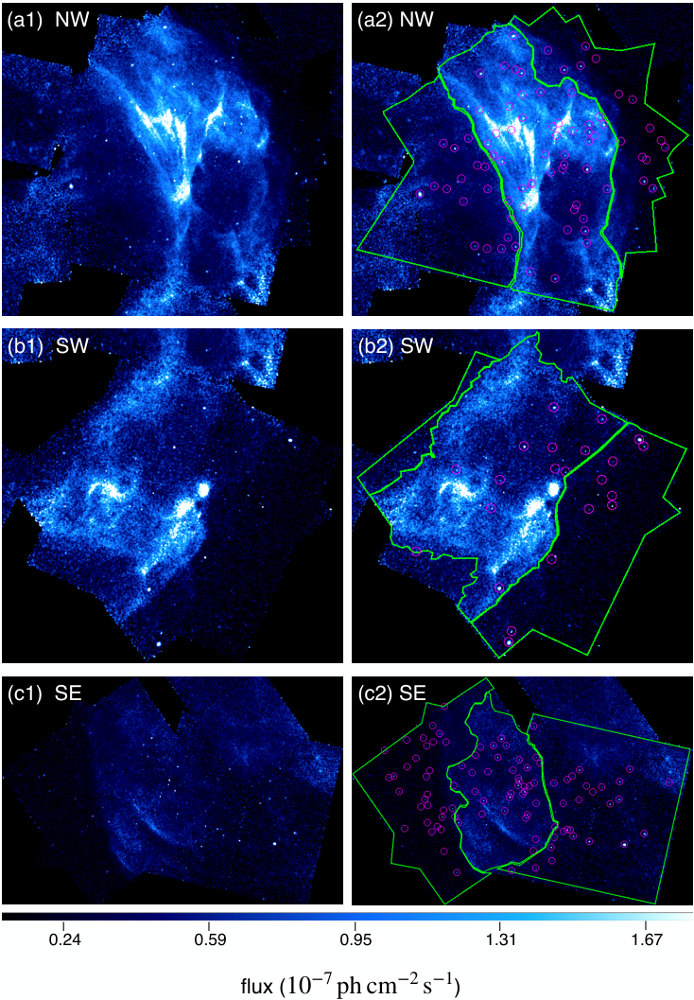
图注：RX J1713.7−3946的Chandra 0.5–7.0 keV图像。a1、b1、c1分别为西北、西南和东南区域；a2、b2、c2为相同图像，并以品红色空心圆标出局部显著性大于3σ的点状X射线热点。没有圆圈的点状特征未达到该筛选门槛。绿色边界按前向激波附近的X射线形态划分Inner、Shell和Outer区域，Outer对应所定义的激波上游，多个方向可见热点群体。
怎么看这张图：先用绿色边界辨认前向激波外侧，再看Outer热点是否仅集中在一个方向；同时保留这些是已观测的三段边缘，而非每一点都有同样深度的整壳巡测。位置图提供空间关联信息，不能单独证明每个热点都由次级电子产生。 说明上游热点在何处以及样本实际覆盖，建立后续扩散解释的几何起点。
来源与置信度：arXiv HTML；source verified；https://arxiv.org/html/2610.16296v1/NW_SW_SE_image.png
图2：与参考天空比较后的热点面密度
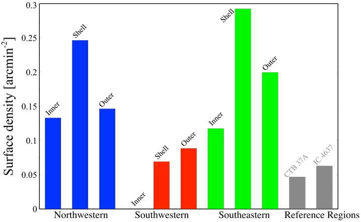
图注：经筛选的X射线热点单位面积数量。蓝色、红色和绿色柱分别对应遗迹西北、西南和东南区域，灰色柱为参考区域CTB 37A和IC 4637的基准面密度。各遗迹区域再按图1划分Inner、Shell和Outer。多数子区的热点密度高于参考，西北和东南Outer区尤其明显。
怎么看这张图：重点比较Outer与灰色参考柱，判断壳外群体是否可能全部由无关点源构成；西南污染的可能性较高。面密度超出支持与遗迹关联，但不同观测的曝光、吸收和检出完整性也会影响比较，不能据柱高直接声称所有热点已经逐个确证。 把可见的壳外点状结构与背景点源总体区分，支撑其作为物理探针的前提。
来源与置信度：arXiv HTML；source verified；https://arxiv.org/html/2610.16296v1/RXJ1713_NW_SW_SE_CTB37A_IC4637_SurfaceDensity_ronbun.svg
图4：热点与TeV径向尾部及约1 pc传播尺度
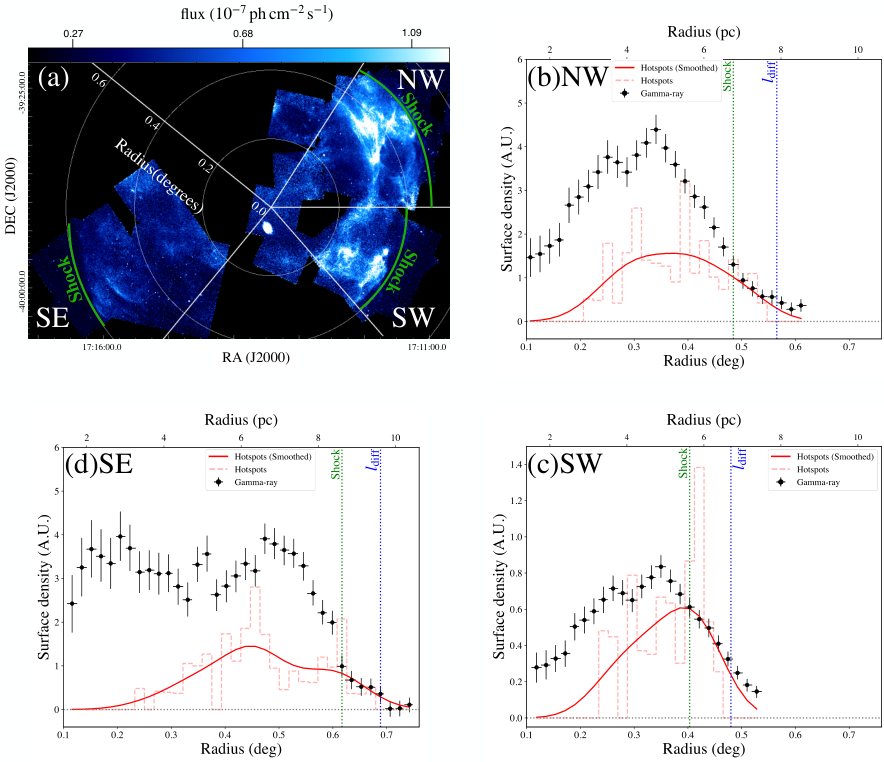
图注：X射线热点面密度与TeV伽马射线亮度的径向轮廓。a为Chandra图像及提取径向分布的扇区；b、c、d分别为西北79个、西南22个和东南94个热点的原始品红色直方图及经匹配H.E.S.S.点扩散函数的高斯核平滑后的轮廓。黑点为既有H.E.S.S.伽马亮度轮廓，误差条为原观测的1σ统计误差。绿色竖虚线标出由X射线图像估计的前向激波位置，蓝色虚线标出由平滑分布估计的扩散长度位置；将角距离换成物理尺度时采用1 kpc源距离。
怎么看这张图：从绿色激波线向外追踪平滑热点分布，与黑色TeV尾部比较，再看蓝线所指的1/e衰减位置。约1 pc是作者解释为粒子扩散的空间尺度，仍依赖平滑、激波边界、距离和靶分布；它不是无模型的磁场测量，形态相似也不唯一确定伽马射线的强子起源。 保留从壳外形态到扩散长度再到上游场的核心观测证据和必要条件。
来源与置信度：arXiv HTML；source verified；https://arxiv.org/html/2610.16296v1/radial_profile.png
强相关工作
本文直接接续Higurashi、Tsuji与Uchiyama的西北热点研究：旧工作已发现吸收幂律热点及部分月年尺度变化，并讨论一次和次级电子两种来源。新工作扩展到其他边缘区域，以联合源背景拟合改善弱源参数，并突出激波外群体的空间尺度。它没有把原先的机制候选一举变成唯一解释，因此比较时应保留对照样本、背景处理与上游区域定义的差别。
已有H.E.S.S.空间谱研究给出TeV辐射超过X射线壳边缘的证据，本文利用其公开径向轮廓作为多波段空间参照，而不是提供新的H.E.S.S.观测。理论上，Inoue等人的Bell不稳定性模拟研究宇宙线流与上游磁场放大的反馈，说明有限前驱区会限制放大增长；这为温和的上游场提供背景，但不自动证明本文每个团块都服从同一场与扩散参数。两类工作分别提供观测空间信息与理论输运解释，尚不能当成两次独立测得同一个磁场数值。
同一事件 / 同类源线索：
相似工作：
基础理论 / 方法工作：
相反观点 / 张力线索：
（未提供）
2. Multimessenger Constraints on Nuclear Acceleration in Neutrino-Emitting Seyfert Coronae
- 来源：arXiv / astro-ph.HE
- 链接：https://arxiv.org/abs/2610.18671
- 作者：Chengchao Yuan
- 公告 / 来源日期：2026-10-14
- 阅读层级：重点精读
- 评分：novelty 8/10，importance 8/10，relevance 10/10，final 9.70/10
- 推荐理由：Seyfert核加速与核辐射级联自洽连接中微子和伽马限制，直接影响NGC1068等源成分推断；必须保留核混合、功率预算和重加速假设。
中文题目：Seyfert 日冕里的核子预算：加速、碎裂与中微子—伽马约束怎样共同限制核成分
做了什么：NGC 1068 的高能中微子使活动星系核的致密日冕成为重要候选产区，但参与加速的粒子未必全是质子。本文先求解质子和不同原子核在湍流加速、冷却、逃逸及破坏竞争下的稳态能谱，再将其按指定非热功率归一化，送入核级联与电磁级联程序，计算各味中微子及次级光子。核碎裂近似保持每核子能量；没有次级再加速时，把铁打碎并不能自动得到比母核每核子更高能的质子。这条物理限制把加速过程与最终中微子能谱联系起来。
在固定日冕与功率处方下，NGC 1068 的氦主导“Solar”模板允许的非质子功率比例可在窄半径区间接近一，而 CNO 和铁模板的上界约为0.8；这不是普适的金属丰度测量。NGC 7469 的候选中微子谱较硬，作者采用更快加速和不同辐射场后得到更高能核级联，较宽的观测通量选区也容许较大的重核比例。两源的环境参数与观测条件同时不同，不能把差异全部归因于某一种核成分。
为什么重要：通常给定一个注入谱再计算中微子，会把“这种谱能否由日冕供给”留在模型之外。本文把加速阶段得到的谱形接到核反应网络，说明同样的核功率比例会因氦、CNO、铁的能量损失与碎裂产额不同，产生不同的多信使输出。新约束的价值在于揭示成分、加速与可用功率之间的退化；文中的允许区域是条件性的通量筛选，并非完整联合似然拟合得到的组成置信区间。
理论 / 观测 / 仪器方法价值：可复用的流程是先统一每粒子总能量、每核子能量和功率归一化，再把核反应的次级源项传给辐射代码，避免把不同能量口径或同一π介子产额计算两次。尤其值得借鉴的是将“注入—逃逸参考谱”与实际输运谱比较，以及检查另一种动量扩散标度对高能尾的影响。应用需要指定日冕辐射场、磁化、尺度、气体密度、核反应数据和次级逃逸；不能只替换一个元素比例就沿用数值上界。
为什么应该关注：这直接关系到用 IceCube 中微子、Fermi-LAT 光子及 MAGIC 上限判断隐蔽强子源：伽马光子在内部被吸收后，会以电磁级联形式重新分布，不能从“TeV 光子弱”推出强子功率小。对后续中微子源模型，应重点追踪固定功率下的每核子截止能、次级是否重新加速，以及未纳入本次选区的亚TeV中微子限制。本文不预测新的IACT已检出信号；更深的光子和中微子数据要与同一环境模型联合使用。
展开详细解读：文章讲解、背景、理论、重点章节、图表与相关工作
文章详细讲解
科学问题是：当日冕中的非热粒子由质子变成混合原子核，是否还能维持观测到的高能中微子，同时不过量产生光子？这里的“成分”是分配到不同粒子的非热加速功率，不是热气体中元素的数量比例。尤其 Solar 模板的非质子功率中约95.7%属于氦，所以允许很大的核功率比例，不等于允许同样大的铁功率。
作者采用均匀球状日冕，先分别演化各个初级粒子的动量扩散、连续损失、逃逸与破坏。第一阶段只确定幸存初级粒子的谱形；子核和次级核子在第二阶段的 NuCascade 核反应网络中处理，随后把π介子和电子对源项交给 am3 计算辐射。两个阶段通过有效注入谱和指定功率连接，并非一个把全部粒子、湍流和辐射反馈一起演化的封闭动力学系统。
关键结果来自谱形与功率的共同变化。NGC 1068 中增加非质子比例，通常会降低高能中微子尾并将峰推向低能，同时降低约0.1 GeV的次级光子。氦主导模板在3 TeV中微子处的单位功率产额高于所选CNO与铁模板，因此能更有效补偿质子功率减少；再结合光子上限，形成模板不同的半径—成分允许带。
限制在于环境与加速参数大多被固定，筛选只要求几个指定能量的通量进入预设区间，并未联合拟合所有独立谱点。核反应也有明确近似，例如气体碰撞后不再生出射重子与残核，光碎裂和光介子通道未逐事例匹配；核辐射对加速和湍流的反馈被忽略。下一步应在同一源内扫描这些处方、加入次级再加速和更完整数据似然，检验成分上界是否稳定。
关键结果是怎么做出来的
第一步固定环境和功率来源。NGC 1068取黑洞质量约一千万太阳质量、距离10.1 Mpc、Thomson深度约0.5，并固定磁化和湍流磁化各为0.1。半径改变会同时改变气体与光子密度、加速及逃逸时间，而可用宇宙线功率在该处方下随半径增加；因此不能把半径扫描看作仅改变一条光学深度。
第二步求加速供给谱。作者对每种初级粒子求稳态Fokker–Planck方程，动量扩散提供增能，连续冷却改变动量，破坏过程移除母核。图4显示铁在光碎裂迅速上升以前已有显著气体碰撞冷却。截断由整个方程共同决定，不能简单用一条加速曲线与损失曲线交点替代数值解。
第三步将谱形按功率归一化，并运行核级联。所用积分权重是粒子动能，而不是把静质量也计入加速功率。图1的实线包含输运后的初级和次级，虚线是同一有效注入在仅注入与逃逸下维持的参考分布。两者之差同时包含冷却、母核耗损和次级补给；H组包含质子与中子，并不单独标出碎裂产生的核子。
第四步计算光子和中微子并施加条件。图2对NGC 1068要求3 TeV各味中微子能流在$3.0\times10^{-11}$至$9.4\times10^{-11}\,\mathrm{erg\,cm^{-2}\,s^{-1}}$之间，0.1 GeV次级光子能流不超过$10^{-12}$同单位。下限需要足够中微子功率，光子上限又限制某些大半径解。这些边界是作者采用的诊断选区，不能称为该二维模型的某个置信水平轮廓。
第五步在NGC 7469检查更高核子能量下的差别。这里固定的湍流相干尺度比例从0.3变为0.005，非热功率效率从0.3变为0.02，并更换辐射模板；中微子诊断能量变为100 TeV。允许的中微子能流区间很宽，这本身就会放松组成约束。图3与图2的差异混合了物理环境和观测选择，不能当作一次只变核种的受控实验。
最后检查实现与稳健性。附录给出稳态解与长时演化、粒子平衡、逃逸和冷却极限等程序验证；辐射演化步长为$10^{-3}R/c$、总时长$15R/c$。替代动量扩散标度只用于固定条件下的铁单种对比，主文仍用原基线。它说明高能尾对加速模型敏感，尚未证明所有参数选区都经过替代闭合重算。
展开背景、理论、公式、模型和章节导读
背景知识
Seyfert星系的中心黑洞由吸积盘供能，日冕是盘附近的高温等离子体，能够把软光子散射到X射线能段。如果其中磁湍流或重联还把少量粒子加速到非热高能，这些粒子就能与气体或盘、日冕光子反应，产生π介子。带电π介子衰变给出中微子，中性π介子衰变则主要供给光子。
中微子容易离开致密环境，伽马光子却可能与软光子产生电子对。电子对再同步或逆康普顿辐射，形成逐级向较低能量再分配的电磁级联。因此中微子源不一定在同能区表现为亮伽马源；判断模型仍要看级联后的总光子输出，而不能把内部吸收当成任意隐藏能量的开关。
原子核引入了质子模型中没有的变化。总能量很高的铁核，其每个核子的能量仍需除以质量数；光碎裂主要拆开核结构，并不会凭空增加每个核子的Lorentz因子。碎裂可以增加轻核或自由核子的数目，却不能单独突破加速阶段对每核子能量设下的限制。
观测上的组成也有不同口径。热气体的光谱丰度、进入加速器的粒子数比例、各核种获得的非热功率以及输运后的储存能量并不相同。本文扫描的是第二阶段有效注入的功率分配；同一功率权重经过不同核反应与逃逸后，未必对应相同的储存组成，更不能直接等同到地球测得的宇宙线核比例。
基础理论 / 方法脉络
随机加速可以理解为粒子反复与移动磁结构交换能量，许多小变化合起来表现为动量空间的扩散。若扩散系数与动量平方成正比，高能粒子的相对加速时间近似不随动量改变；如果采用更弱的动量标度，加速高能尾会更困难。本文用固定背景隔离这一效应，而没有反求湍流被粒子抽走能量后的新谱。
空间逃逸由刚度控制。相同每核子能量的不同核种有不同电荷和回旋半径，因此受到的散射与逃逸不必相同。扩散近似下逃逸时间随日冕尺度平方增加，但不能短于光穿越时间；这给输运提供物理下限，防止把过强的扩散公式外推到超光速穿越。
核级联既有损失又有源项。母核被光子打碎时，从母核组移除一粒子，同时向子核和核子组注入产物。仅画幸存铁谱会漏掉这些能量去向；反过来，仅见H组增加也不能证明它们全来自铁，因为初级质子、氦碎裂及多种核反应都会供给H组。必须保留反应网络和一致的能量变量。
多信使筛选测量的是辐射输出，而不是直接数出加速器里的铁。核成分影响每单位注入功率能产生多少某能量中微子，日冕尺度和磁化则同时影响可用功率及产额。因此多个模型可落入同一观测带。本文的物理贡献是解释这种成分依赖如何产生，而不是声称已有数据唯一确定了核种。
公式与推导
下面按环境、加速、输运和观测依次展开。几何与量纲均沿用原文，$E$是单个粒子总能量、$A$为质量数、$Z$为电荷数；除特别注明外，粒子能量位于源参考系。
先由黑洞质量和日冕半径确定尺度，再以Thomson深度估计气体密度：
这里$M_7=M_{\rm BH}/(10^7M_\odot)$，$\sigma_B$是磁化。密度公式采用电子与质子密度近似相当的处方，若电子对负载明显改变，这个由光学深度到重子密度的对应也需重新检查。
固定湍流相干长度$l_c=\eta R$后，加速模型为
$p$是粒子动量，$D_{pp}$量纲为动量平方除以时间。较小$\eta$缩短此处方的扩散时间。需注意所画$D_{pp}/p^2=1/t_{\rm acc}$与平均相对动量增益率并非同一个量：在本基线下后者为$4/t_{\rm acc}$。两个源采用不同$\eta$时，不应仅用核成分解释高能尾差别。
加速并非无限持续；原文附录A的相空间方程为
$dn_i=4\pi p^2 f_i\,dp$定义$f_i$，$b_p=-\dot p>0$代表连续损失，$\Gamma^{\rm cat}$移除破坏掉的初级种类。求稳态时左边置零，但各源项和损失项仍需共同平衡；单一时间尺度交点只作物理判断。
逃逸率来自刚度依赖散射：
$\lambda$是平均自由程。指数$1/3$属于选用的湍流散射标度，光穿越下限约束极弱散射区；中子不受同样的带电粒子约束，而按$R/c$逃逸。
相空间解转换成单位总能量的谱，再以动能归一化有效注入：
$v_i=dE/dp$，因此换元的速度因子不能在低能端随意删掉。$C_i$具有逆时间量纲，并由指定功率确定；它不是简单取FP逃逸率，这也是两阶段有效注入闭合需要保留的条件。
功率分配为
$f_{\rm nuc}$包含氦，$w_i$是在非质子功率内部的归一化权重。把它解释成铁的数量占比或热等离子体金属丰度，都会改变公式本来的含义。
第二阶段加入所有次级生产：
$\mathcal K$包含产额与能量分配。原文这一步没有再给次级加动量扩散项，所以它们虽能增殖，却没有新的加速能源。
碎裂近似保持Lorentz因子，直接得到关键能量限制：
前一关系是本文使用的相对论碎裂近似；后半句强调物理关系，未指定一个对所有反应通道都精确相同的中微子能量分数。碎裂增加核子数量，不能提高这个供给尺度。
在固定环境与总功率下，作者用纯质子及纯核注入端点解释中间混合：
$\mathcal F_\nu=E_\nu^2\Phi_{\nu,\rm all}$是各味中微子能流，$r_\nu$随诊断能量、核模板和环境改变。原文所讨论区域$r_\nu\lesssim1$，不能把它当成所有核加速器普适常数。
最后要把该产额关系与功率标度一起用：
这些比例在固定黑洞质量、磁化及原文功率处方下成立。增加半径既改变注入总功率又改变冷却和逃逸，因而数据筛选不能只给出一个脱离模型的$f_{\rm nuc}$上限。
模型拟合 / 应用方法
输入是规定的日冕几何、热密度、磁化、外部光子模板及八种初级粒子。NGC 1068固定$\eta=0.3$、$\epsilon_{\rm CR}=0.3$，扫描$10\le R/R_g\le100$和$0\le f_{\rm nuc}\le1$。Solar、CNO、Fe三组权重是代表性功率模板，未对元素谱系逐一做丰度后验推断。
FP求解使用对数动量网格、低端零通量及高端吸收边界，并检查稳态与长时演化一致。随后有效注入按动能功率重新定标，NuCascade迭代二级源项至收敛，再由am3演化辐射。这个过程验证了所定输运问题的数值解，并未验证真实日冕一定服从均匀球或该湍流处方。
观测比较采用指定能量的能流筛选，NGC 1068用3 TeV中微子及0.1 GeV光子，NGC 7469用100 TeV中微子及0.2 GeV光子。NGC 7469采用的各味中微子能流区间为$10^{-14}$至$2\times10^{-12}\,\mathrm{erg\,cm^{-2}\,s^{-1}}$，0.2 GeV次级光子上限为$3\times10^{-14}$同单位；这个宽中微子区间本身就放松了成分限制。图中的带和轮廓不是由所有谱点组成的联合似然；原文还明确NGC 7469的射电点仅供参考，不能当作已分离出来的日冕辐射测量。报告不为这些选区补造卡方、贝叶斯因子或发现显著性。
误差主要是物理闭合而非图上统计条。加速阶段的核—气体连续损失使用所有种类相同的非弹性系数近似，后续气体碰撞又省略出射重子与残核再生。光碎裂和光介子反应叠加但不逐事件匹配，核BH电子对使用相同Lorentz因子下的$Z^2$相干近似；这些会影响单位功率产额及能量去向，不能仅靠数值收敛消除。
适合的后续应用是保持源条件一致，逐项改变加速标度、气体反应闭合、次级再加速和反馈，再将新的完整能谱与同一数据集比较。附录不同动量标度下的铁高能尾变化已提示这种敏感性，但只检验单种谱形，不等于所有混合成分允许带都已稳健。未来若有新的亚TeV中微子限制，也需重新计算，而不能仅把原二维轮廓裁掉一块。
还有一处需在复现前澄清的功率口径：若图5沿用图4的$R=30R_g$、$f_{\rm nuc}=0.6$及正文固定参数，按式1—2与表1代入得到$L_{\rm CR}\simeq9.96\times10^{42}$、$L_{\rm Fe}\simeq2.81\times10^{40}\,\mathrm{erg\,s^{-1}}$；附录铁谱比较却列$4.69\times10^{40}$。后者接近取$f_{\rm nuc}=1$的值，图5图注仍标核比例0.6，是否有意改用另一归一化未说明。这里只记录可重现的算术与定义疑点，没有据此断言整套核谱计算错误。
重点章节 / 结果段落怎么读
第II节与表1：先确定“组成”究竟是非质子功率还是丰度，特别看氦是否被计入；再读有效注入的动能归一化，否则后面的核比例容易被误读。
第III节与图1、图4：沿加速、连续损失、母核破坏和次级补给的顺序理解每核子能量限制；分清虚线参考分布、FP谱及实际输运谱。
第IV节与图2：先看光子和中微子谱如何随成分变化，再看两种观测条件的交集；核对诊断能量、单位和边界，避免把通量筛选当完整拟合。
第V节、图3和附录B：把NGC 7469的更快加速、不同模板及较宽中微子选区一起读；两个源的比较并非单参数实验。
附录A.1—A.2：核对相空间到能量谱换元、数值边界、次级不再加速以及核反应近似；这些定义决定结论能否迁移到别的Seyfert源。
关键图表与解读
图2：NGC 1068 的多信使谱和参数选区
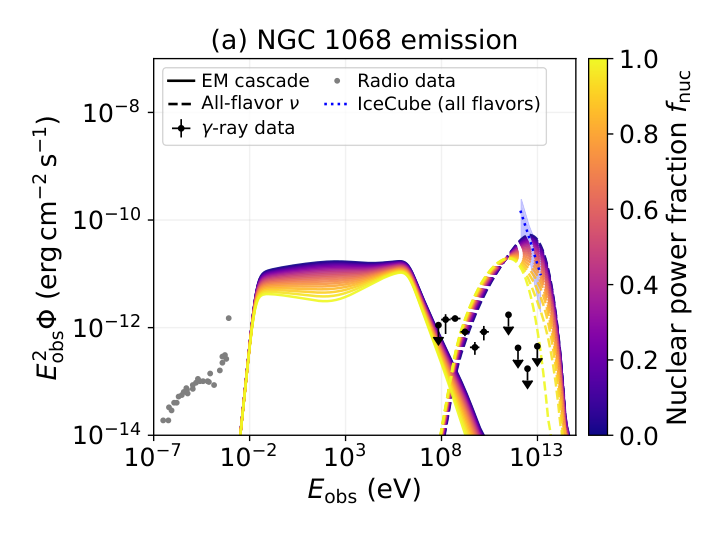
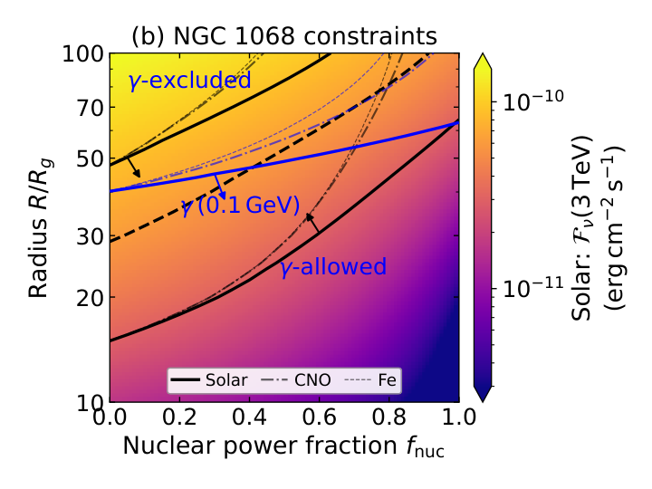
图注：NGC 1068 的多信使谱及参数筛选。(a) Solar模板、半径R=30Rg的观测者系能谱，颜色区分核功率比例；实线为次级光子，虚线为各味中微子。蓝线和带为中微子观测，黑、灰点为伽马与射电数据。(b)颜色表示Solar模板在3 TeV的中微子能流；实线、点划线、细虚线轮廓分别对应Solar、CNO与Fe模板，黑色表示中微子边界，蓝色表示光子上限。Solar的粗黑虚线标记6.5×10⁻¹¹ erg·cm⁻²·s⁻¹，黑箭头指入中微子允许区，蓝色标注说明光子筛选。
怎么看这张图：先看左图核功率比例增加时中微子高能尾和光子谱的变化，再看右图两类观测条件的交集。Solar允许较大核比例主要因为非质子功率由氦主导；轮廓是通量筛选边界，不是完整谱似然的置信区间。 核心多信使证据与成分约束
来源与置信度：arXiv HTML；source verified；https://arxiv.org/html/2610.18671v1/spectra_Solar_Rg30_vary_f_met.png；https://arxiv.org/html/2610.18671v1/parameter_scan_combined_nu_all_3TeV.png
图3：NGC 7469 的条件性参数筛选
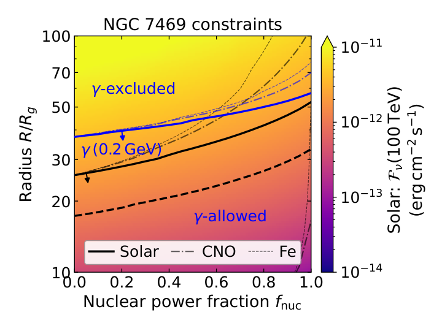
图注：NGC 7469 的参数筛选，线型约定同图2(b)。Solar模板的颜色表示100 TeV的各味中微子能流，粗黑虚线标记1.1×10⁻¹² erg·cm⁻²·s⁻¹；采用的中微子区间和0.2 GeV光子上限见正文。
怎么看这张图：与图2比较前先核对诊断能量和源模型都已改变。更宽的中微子选区、更快的加速和不同光子场同时参与，不能把允许高核比例归结为一个独立成分测量。 展示源特异性和比较边界
来源与置信度：arXiv HTML；source verified；https://arxiv.org/html/2610.18671v1/parameter_scan_combined_nu_all_100TeV.png
图4：质子与铁的加速、逃逸和反应速率
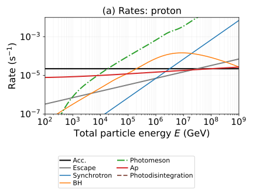
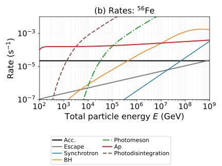
图注：NGC 1068基准模型中质子(a)与铁56(b)的加速、逃逸、相互作用及损失速率：R=30Rg、核功率比例0.6、Solar模板。加速曲线为Dpp/p²=tacc⁻¹，tacc=4.5×10⁴ s。同步、Bethe–Heitler及Ap曲线为连续能量损失的相对速率，Ap指与背景质子的碰撞（含pp）；光碎裂和铁的光介子曲线为反应率，质子光介子曲线合并了相对冷却与质子转中子的速率。
怎么看这张图：对比铁的气体碰撞冷却与高能光碎裂，理解限制来自多个过程。连续损失率和反应率含义不同，最终截断要由完整输运解确定，不能只读一处曲线交点。 解释核组成效应的物理来源
来源与置信度：arXiv HTML；source verified；https://arxiv.org/html/2610.18671v1/rates_p.svg；https://arxiv.org/html/2610.18671v1/rates_Fe.svg
强相关工作
本文使用的日冕环境与随机加速处方，直接承接 Yuan等关于超大质量黑洞日冕内时变质子加速和轻子—强子辐射的工作（arXiv:2508.08233），并引用 Fiorillo等的强湍流日冕模型（arXiv:2407.01678）。这些比较说明主文并未从头测定日冕参数；本次增加的是按加速供给确定的混合核谱、子核输运与多信使成分依赖。相关链接用于定位原文所依赖的前作，不表示这里已复现其程序。
观测基准来自 IceCube 对NGC 1068的证据论文（arXiv:2211.09972）及各源后续谱包络，本文没有重新分析IceCube事件。核级联与GRB、耀变体中的核组成研究共享“碎裂近似保留每核子能量”的框架，但日冕的气体密度、光子场及功率来源不同；不能把不同加速器的元素上限直接搬到这里。本文还引用了含湍流阻尼的自洽日冕研究，并明确自己未将该反馈纳入，因此应把两者视为不同闭合层级的比较方向。
同一事件 / 同类源线索：
相似工作：
基础理论 / 方法工作：
相反观点 / 张力线索：
（未提供）
3. An All-Sky Search for Moving Gamma-Ray Sources with Fermi-LAT
- 来源：arXiv / astro-ph.HE
- 链接：https://arxiv.org/abs/2610.14058
- 作者：Dou Lai, James Unwin
- 公告 / 来源日期：2026-10-14
- 阅读层级：重点精读
- 评分：novelty 8/10，importance 8/10，relevance 9/10，final 9.35/10
- 推荐理由：首次全天天体自行伽马源系统搜索，时间打乱校准轨迹数与检出效率，直接连接LAT方法和暗物质限值；需全文核验全局背景与效率口径。
中文题目：把自行当成信号：Fermi-LAT 十年全天移动伽马源搜索及其零结果约束
做了什么：通常的伽马射线源搜索把源固定在天球上；但若一个紧致源就在太阳附近，十年间的角位移可能达到数度，累积光子会沿轨迹摊开。作者使用2016年3月9日至2026年3月9日、1–100 GeV的Fermi-LAT光子，先在十个年度时间箱中找局部过密，再把至少五个年度的光子簇连接为近似直线运动。已知静止源被遮罩，全部聚类、连接和去重规则在查看最终候选前固定；这样搜索的是光子数据中的运动轨迹，而不是仅检查已有目录中的未关联源。
实测留下577条候选轨迹，60套乱时天空的均值为532.8、标准差27.0；按有限模拟修正的总体概率为4/61，即约0.066，并无显著超出，最强单条轨迹的全天试探修正后概率也只有11/61。作者据此给出90%置信水平的80.8条“被搜索恢复的信号轨迹”上限，再用2250次注入标定转换到真实源族。在稳态、点源、入射光子谱为$E^{-2}$的条件下，纳入泊松计数和曝光后，最有利的同通量情形限制全天源数少于约123个；这不是发现了577个天体，也不是对任意原初黑洞谱的通用排除。
为什么重要：这项工作的实质推进是把天球方向与到达时间联合起来，开放一种传统静止源分析可能遗漏的信号空间，并把零结果整理成可重用的响应和有效体积。它使“附近有没有持续移动的紧致伽马源”成为可定量检验的问题。科学结论的强度仍应放在方法和首轮约束上：轨迹总体与背景相容，原初黑洞示例还依赖暗物质晕结构、速度分布和参考能谱，不能因新搜索方式而把未发现表述为暗物质证据。
理论 / 观测 / 仪器方法价值：最可借鉴的是三层标定：用完整天空乱时重跑处理大量轨迹试探，用逐个注入测量端到端检出效率，再以曝光、计数涨落和运动学卷积连接到源族。这样把局部簇显著性、候选总体显著性和物理丰度约束分开。实际复用需要相同能段与事件选择，保留目录遮罩、低银纬弥散背景、点扩散函数尾部及去重规则；换成其他谱形、变亮过程或曲线轨迹时，应重新注入，而非只改最终的光度数值。
为什么应该关注：对于关注Fermi、暗物质和罕见高能现象的读者，值得跟进的是时间信息如何改变搜索完整性，以及新响应能否被独立复现。地面切伦科夫阵列可借鉴把运动假设纳入模板和注入检验的思路，但本文针对十年GeV巡天，不能直接转移其123个源或原初黑洞丰度上限。下一步最关键的是未编目变源的质心漂移污染、低能点扩散函数与背景结构，以及真实目标能谱的专门标定。
展开详细解读：文章讲解、背景、理论、重点章节、图表与相关工作
文章详细讲解
科学问题。 当目标太近，固定坐标的积分分析会把本来相关的光子分摊到不同位置，单个年度也可能太弱而进不了源目录。本文因此不预选目录对象，而是在原始事件层寻找“每年略微换位置、跨年形成有序轨迹”的稳态点源。角速度与距离相互联系：若横向速度取200 km/s，标定的0.25–0.8度/年大致对应3000–9700 AU。这是给定速度的示意距离壳层，不是对所有速度都成立的观测边界。
作者怎么做。 天空划分为448个相互重叠的18度处理帽区，年度光子再按五个能段聚类。聚类半径随能量减小，局部背景用邻近环带估计，之后用Li–Ma on/off统计量保留局部过密。跨年连接允许跳过一个年度，最终至少有五次年度探测，并要求轨迹细长且位置沿时间有序变化。帽区归属和两层去重避免简单重复计数，但其操作性定义仍允许相关的不同轨迹假设存在。
关键结果。 真正决定发现与否的不是年度簇的2.5阈值，而是同一完整算法作用于乱时数据后能产生多少假轨迹。实测577条处在经验背景可产生的范围内；最高候选也没有全天显著性。80.8是允许隐藏的平均信号轨迹数，再经过包含未检出、遮罩和背景损失的效率修正，才成为源数或丰度上限。对每年固定加入35个光子的理想标定点，最佳上限为98.2；物理同通量源需加入逐年泊松涨落和方向曝光差异，得到约123，二者回答的问题不同。
局限与下一步。 搜索只标定了持续、近似匀速、点状的参考能谱源。太阳系束缚轨道、明显视差弯曲、快速蒸发变亮和窗外角速度都没有获得通用响应。乱时会破坏未编目静止变源的真实光变，也可能改变其假轨迹背景；作者没有排除这种污染。当前零结果说明预定义候选群没有显著超出该经验背景，后续要扩大零假设样本、加入变源背景与专门谱注入，才能推进到更强发现检验和具体粒子模型限制。
关键结果是怎么做出来的
第一步是固定可观测量与分析边界。作者采用P8R3 SOURCE事件，FRONT与BACK转换均保留，使用P8R3 SOURCE V3响应，天顶角小于90度并使用标准好时间段。十年分为十个年度箱，低能阈值1 GeV避免更宽的方向重建模糊，100 GeV则界定本次标定上限；这些取舍会同时决定信号的光子数和年度轨迹宽度。
第二步是让聚类适应弥散背景和点扩散函数。五个能段并非简单共用一个角半径，背景环带与源区都按FL16Y目录遮罩扣除光子及面积；只扣光子不扣面积会低估局部背景。完整年度簇还要经过独立的on/off筛选。银道附近既有更高弥散背景，也有更多永久遮罩盲区，因此“全天覆盖”并不等于每个方向同样灵敏。
第三步是把形状和时间顺序同时用于连接。算法允许相邻或间隔一年的连接，并以动态规划保留高排名路径；至少五个年度簇、总共最多跳过两个时间箱。细长性阈值0.7与沿主轴位置对时间相关系数绝对值至少0.85共同抑制随机游走。连接评分是排序工具，不能直接换成发现显著性。候选表中还可有0.25度/年以下的重建轨迹，因为候选选择与物理响应的标定窗并不是同一件事。
第四步是对完整搜索做经验零假设检验。乱时保留每个光子的方向、能量和转换类型，只在其所属局部区域的经验日到达分布中重抽时间；同一个事件在重叠帽区得到一致随机时间。60套天空包含了重叠空间、能段和轨迹假设造成的复杂相关。背景方差约为均值的1.37倍，所以不能强行使用更窄的简单泊松背景。总体实测比均值高约1.63个样本标准差，而经验尾概率对应约1.51个单侧高斯标准差；这些数不能择大宣传。
第五步是把计数上限与检出效率相接。2250次生产注入覆盖五档年度光子数、三档角速度和三个银纬区间；每个组合有50次试验。以0.5度/年、35光子/年为例，低、中、高银纬恢复率约为32%、88%、96%，全天天区加权及单调拟合后为82.3%。另120个逐年计数涨落的验证源实际恢复50个，与事先预测53.4相容，支持将固定计数标定推广到稳态源的近似，而不是保证所有谱与所有光变都适用。
最后一步才是解释具体源族。有效体积同时积分距离、方向和横向速度，因为源越远既更暗又移动更慢。参考暗物质晕包裹原初黑洞模型的最强中心值约为$f_{\rm PBH}<8.5\times10^{-3}$，质量约$1.9\times10^{-10}M_\odot$；这依赖1 TeV暗物质、$b\bar b$末态和指定密度尖峰。蒸发黑洞示例只讨论目前质量约$(2–4)\times10^{12}$ g、剩余寿命约100–830年的准稳态阶段，现有限制不及标准弥散背景约束。二者都只用实际谱算积分光度，检出仍套用参考$E^{-2}$注入，所以应保留“示例性转换”的定位。
展开背景、理论、公式、模型和章节导读
背景知识
伽马射线光子稀少，而且每个光子的重建方向都有不确定性。许多源的辨认依靠多年积分：假设源坐标固定，将随时间散落的事件累积成一个空间过密。这个办法对遥远的银河外源和大多数银河源很好，但也隐含了对源运动的选择效应。目标若走过多个点扩散函数尺度，长积分不再等价于提高固定位置的信噪比。
“移动源”不等于光速级喷流中表观超光速的射电结。这里指整个紧致伽马辐射对象相对天球产生可测自行，所需角速度在正常银河速度下意味着非常近的距离。普通脉冲星或孤立吸积黑洞若如此接近应极少见，其他波段也可能先发现；暗物质微晕、带粒子暗物质晕的原初黑洞和蒸发原初黑洞因此成为动机，而非观测已经指认的源种类。
点扩散函数会随能量和入射几何变化，低能光子多却定位较差，高能光子少但定位较好。每年源还会移动一段距离，使本应点状的年度图像沿运动方向展宽。本文通过能量依赖聚类和沿真实运动路径逐个注入光子，把这一权衡直接放进效率；不能只使用一个固定角误差或忽略点扩散函数的长尾。
原初黑洞的两种示例也有不同物理。包裹暗物质晕的黑洞可因周围粒子湮灭而持续发光；裸的低质量黑洞则因霍金辐射失质量、升温、变亮。后者临近最终爆发时不再稳态。即使二者积分光度相同，能谱不同也会改变各能段光子数、角分辨率权重与检出率，因此物理模型不能只靠同一个总通量数完成严格比较。
基础理论 / 方法脉络
首先应把几何和辐射放在一起理解。自行是横向速度除以距离，而通量是光度除以距离平方；改变距离同时改变两个搜索坐标。本文的有限角速度窗和有限年度计数窗因此共同选出一个响应体积，近端与远端都可能不在当前标定之内。这些截断属于本次分析可验证的范围，不是亮源或近源天然不可探测。
年度光子簇只是局部候选。局部源区与背景环带比较能判断这个位置是否过密，但搜索还查看了许多位置、能段、年度和路径。越多机会，背景越可能生成某条貌似漂亮的轨迹；因此真正的全天显著性应由每套完整背景天空的轨迹数或最强轨迹评分来定义，不能把多个年度Li–Ma值直接当作独立高斯量相加。
注入试验给出的首先是恢复概率，而非源数。作者把每个物理注入是否至少匹配一次作为二元结果，定义恢复效率；同一注入仍可能生成多条相关候选。生产样本中725个被恢复注入对应1088条匹配轨迹，平均约1.50条/被恢复源。用每源只算一次的效率换算计数，在平均信号产额层面更保守，但并没有把577条候选变成577个独立对象。
物理源通量恒定也不代表每年检测到相同光子数。真实计数受泊松涨落和曝光变化影响，固定年度计数的控制标定必须卷积后再使用。本文用十年总计数涨落近似年度不均匀分配，再做独立逐年注入验证；应把它视为已检验的近似，并保留其验证只覆盖所选亮度、速度和银纬组合的范围。
最后，有效体积是概率加权的体积，而不是固定半径内的几何球。目录遮罩、弥散背景和算法漏检都降低权重，速度分布及太阳运动决定不同方向的角速度分布。只有指定光度、速度、空间分布和源族密度，才能从一个计数上限走到丰度；本文不假定这些天体占满暗物质，也没有由零结果测出其质量。
公式与推导
以下沿原文主文与补充材料的实际方程解释搜索到丰度的链条；将相邻定义合写是教学整理，不是新增拟合。
几何起点是原文式1与补充式7：
这里$r$为日心距离，$v_\perp$为横向速度，后式是本文标定的匀速投影近似。十年内明显的视差或径向运动透视效应会破坏该近似，因而不能把标定窗外轨迹直接代入。
簇筛选用原文补充式15的on/off统计量：
$N_{\rm on}$与$N_{\rm off}$是同年度同能段源区和背景环的光子计数，$\alpha$是遮罩后有效面积比。正超出且$S_{\rm LM}\ge2.5$才参与连接；这个门槛是局部筛选，不含全天试探。
完整搜索的有限乱时检验用补充式20：
$K$是完整乱时天空数，$m$是轨迹数不低于实测577的天空数。加一避免有限样本给出零概率；仅60次也使直接可分辨的最小概率为1/61，不能据此建立极高显著性发现。
计数上限保留经验背景$B_i$，加入均值为$s$的独立泊松信号$S$，补充式21与41给出
背景大于实测时对应的泊松累积概率为零。求解得到$s_{90}=80.8$条恢复信号轨迹，而不是80.8个物理源；这一步还假定真实信号进入乱时背景造成的偏移可以忽略，作者未单独标定该偏差。
将入射谱与有效面积卷积才得到曝光和年度期望计数，整理补充式27–29：
$\mathcal E_{10}$是十年曝光，单位面积乘时间；$F_\gamma$是积分光子通量，所以$\lambda$是年度平均检测光子数。实际注入的检测能谱也必须先乘曝光，不能将入射$E^{-2}$误作检测到的能量分布。
补充式30把固定年度计数响应转换为均值响应：
$T$为十年总计数，$b$为银纬。固定计数响应在标定点间插值；物理上限不外推年度期望小于8或大于35的源。只按$T/10$压缩年度分配是近似，120个逐年涨落源是针对这一点的检验。
全天天区平均后，补充式34–35给出
这针对各向同性、相同通量和固定角速度的一族稳态源。不同方向先应用各自曝光与标定边界，再求平均。最强约123个源的结果因此不能与固定35光子/年标定点的98.2混用。
一般物理源族需继续积分运动学，补充式38为
$p$是每个方向归一化的日心横向速度分布；$P_{\rm det}$将$L_\gamma/(4\pi r^2)$和$v_\perp/r$送入同一检出响应。积分单位是体积，亮度与自行相互关联的选择效应就在这里同时进入。
最后用主文式3–5连接丰度：
质量密度$\rho_{\rm DM}$与黑洞质量必须采用相容单位，$f_{\rm PBH}$才无量纲。黑洞光度模型、局部密度和速度分布只影响最后的解释，不参与实测轨迹的选择；换模型时可替换这些输入，换谱或时间行为时却需要重标定响应。
模型拟合 / 应用方法
本文没有拟合出某个暗物质源，也不是常规固定点源的谱似然分析。其数据层模型首先是完整候选计数与经验乱时计数分布。前30套零假设用于比较背景描述，后30套用于预设检验，最后60套合并用于报告；额外的覆盖率模拟测试六种信号强度与四档背景变化，共24组，每组两万次。这个验证支持所采用统计构造的名义覆盖，但仍以经验零假设忠实代表真实污染为条件。
效率拟合的输入是每个年度光子数、角速度和银纬组合的恢复次数。各格点用Jeffreys二项后验$\mathrm{Beta}(k+1/2,n-k+1/2)$表示有限注入不确定性，再施加随光子数不下降的单调拟合。这样可抑制小样本造成的反向波动，却不意味着对未试过的谱和速度也已测得响应。点扩散函数使用官方双King形式，并用110组与gtobssim配对注入检查；不能退回窄高斯而保留原效率。
同通量上限还要处理方向曝光与泊松涨落。最强源数上限123的联合90%不确定范围为111–136；这表示分析响应及有限样本传播，不是发现置信区间。高亮端曲线回升来自年度计数35和低自行边界的标定支持耗尽，不能当成真实检测能力下降。作者另以整块天区bootstrap检查共享背景造成的相关性，其结果单独报告，并未把这项自动叠入所有主结果误差带。
丰度转换采用局部密度中心值0.4 GeV/cm³，并在0.3–0.5之间变化，同时传播银河速度及太阳运动模型。包裹暗物质晕的示例还改变密度归一化、核心平台形式与潮汐截断；该模型范围和统计范围组合成的包络不是严格90%概率区间。霍金示例的光度归一化包络同理，不能把图上所有阴影都叫90%置信带。
复现时最有价值的失败诊断是分层检查假轨迹与漏检。作者的320次检查中，126个源未形成清晰年度簇，60个被目录邻近区遮罩拒绝，17个未过局部背景，10个未过轨迹连接，107个恢复；多数聚类损失在银道。尚未被覆盖的系统项包括未编目静止变源、真实信号对乱时背景的污染，以及谱和时间依赖偏离。它们应分别用针对性背景模拟和注入处理，不能靠提高某条轨迹的局部显著性解决。
重点章节 / 结果段落怎么读
-
先读主文II节与图1：把单年度聚类和跨年度连接分清，核对0.25–0.8度/年是响应标定窗，而连接允许的瞬时上限另有定义。
-
再读补充第2部分的聚类、目录遮罩和去重：关注源区与背景区的有效面积、至少五个年度及相关轨迹仍可共存的操作定义；这些决定候选数的物理含义。
-
重点读主文III节、图2及补充第3部分：沿实测计数、60套零假设、总体概率、单轨迹全局概率和80.8条上限逐步走，不跳过试探校正。
-
接着读补充第4部分与图7：区别固定光子数的控制实验、泊松年度计数的物理源和独立验证，弄清98.2为何不是123的同义表达。
-
最后读主文IV节和补充第5–7部分：先理解有效体积，再检查原初黑洞光度假设、参考谱响应和阴影包络定义；不要从一条示例曲线推断整个黑洞质量范围被排除。
关键图表与解读
图2：60套完整乱时天空中的候选轨迹数
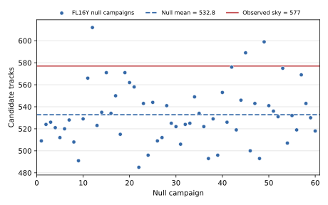
图注：60套使用FL16Y目录遮罩的零假设乱时天空所产生的轨迹计数。两条水平线分别标出真实天空的577条轨迹和零假设计数均值532.8。
怎么看这张图：先比较实测线是否超出了乱时样本的尾部：60套中有3套达到或超过实测，因此有限样本修正后的概率为4/61，不能把约44条均值差直接当成信号。这个图检验的是完整搜索后的轨迹总体，已经保留了许多路径假设之间的相关。 直接支撑零结果和全搜索经验背景检验，避免把577候选误认成577个天体。
来源与置信度：arXiv HTML；source verified；https://arxiv.org/html/2610.14058v1/scatter.svg
图7：亮度、角速度及银纬共同决定恢复效率
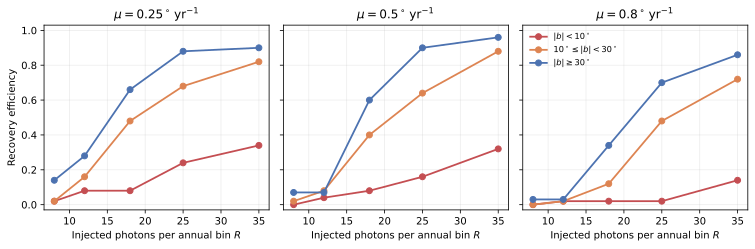
图注：45个生产标定组合中的注入恢复效率。不同面板对应不同角速度，颜色区分银河纬度区间；横向比较注入源每年度固定加入的光子数。每个FL16Y数据点来自50次试验，并在10个代表天空区域之间均衡分配。所有注入采用先经过LAT曝光加权的入射参考光子谱E⁻²。
怎么看这张图：同一角速度与光子数下，比较低银纬和高银纬的差距，再看较快运动造成的损失。这张图首先标定的是每年固定光子数的控制实验；真实恒通量源仍要加入泊松计数和方向曝光，才能得到图3的物理源数上限。 展示端到端灵敏度的天区差异，是由计数上限转换为源族约束的关键中间证据。
来源与置信度：arXiv HTML；source verified；https://arxiv.org/html/2610.14058v1/SM-plot3.svg
图3：参考稳态移动源的同通量源数上限
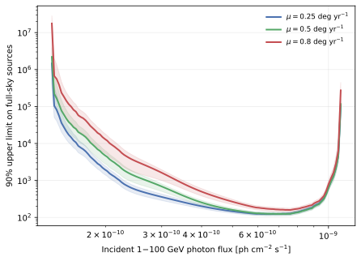
图注：在90%置信水平下，全天稳态移动源数量上限随共同平均1–100 GeV光子通量的变化，曲线对应不同固定角速度。标定采用经过LAT曝光加权的入射E⁻²光子谱。曲线在两端变弱标志着已标定响应的边界，而非源的真实可探测性必然下降。
怎么看这张图：只在所标定的亮度和0.25–0.8度/年范围内比较曲线。最强约123个源对应6.5×10⁻¹⁰光子/cm²/s及0.25度/年，是各向同性、同通量、同角速度源族的条件结果；实际天体族有距离与速度分布，须进一步积分有效体积。 保留最直接的物理零结果，并明确不能外推的响应边界和源族假设。
来源与置信度：arXiv HTML；source verified；https://arxiv.org/html/2610.14058v1/indep.svg
强相关工作
Fermi-LAT先前的本地原初黑洞搜索从318个高银纬未关联目录源出发，检查与蒸发黑洞相容的谱和自行，也没有显著候选。本文把入口前移到全天光子层，试图避免运动源根本进不了固定坐标目录的问题；但它使用近似稳态响应，而先前工作关心的蒸发变亮时间段不同，因此不能直接以两个蒸发率数字大小判定哪项搜索全面更强。检索时应同时核对源目录选择与剩余寿命窗口。
更早的微晕自行研究提出运动作为暗物质微晕标志，时空二点相关方法则在模拟天空中利用方向与时间信息检验移动源。本文新增的核心是实际十年LAT数据中的完整轨迹搜索、全天零假设和可重用的注入响应，而不是首次认识自行可能有用。公开计算产品列在主文参考21；复用时仍须遵守响应的谱形、运动与亮度范围。
同一事件 / 同类源线索：
相似工作：
基础理论 / 方法工作：
相反观点 / 张力线索：
（未提供）
4. Fast Radio Bursts from Monster Shocks and Flares of Inspiraling Binary Neutron Stars: A Kinetic Model for Double Pulsar
- 来源：arXiv / astro-ph.HE
- 链接：https://arxiv.org/abs/2610.18208
- 作者：Jan Benáček, Benoît Cerutti, Martin Pohl, Tim Dietrich, Anna Neuweiler
- 公告 / 来源日期：2026-10-14
- 阅读层级：重点精读
- 评分：novelty 8/10，importance 8/10，relevance 8/10，final 9.00/10
- 推荐理由：真实双星轨道驱动的三维动力学PIC磁层模拟分辨多个耗散区，为并合前射电机制提供可复用新输入；未算出可观测FRB即不能当发现。
中文题目：双中子星并合前怎样驱动射电候选区：轨道运动的三维动力学等离子体模拟
做了什么：双中子星并合前是否可能先发出FRB，关键不只是磁场储存了多少能量，还包括轨道运动怎样释放能量、粒子在哪里被加速、哪一类扰动有机会转成相干射电。作者让两颗中子星在三维粒子网格模拟中实际绕质心运动，追踪共同磁层中的电磁场与电子—正电子粒子。采用的是受双脉冲星启发的理想构型：强弱表面磁场相差10倍，轨道周期2.4毫秒，自转周期10与100毫秒；固定末期轨道间距，仅演化数圈。
模拟把释放过程分成四种有联系但不同的结构：磁连接被轨道运动切断后激发的大振幅快磁声波、被推出的等离子体耀发、支撑膨胀的火球，以及向耀发供能的重联电流片。快磁声波向外传播后相对背景场越来越强，是作者重点提出的相干辐射候选区。本文推进的是候选区的动力学与能量诊断；把约千分之一波能变成射电、发射到1球面度等是假设，没有直接算出GHz相干信号、传播逃逸或可探测FRB。
为什么重要：此前共同磁层模拟已经显示并合前磁连接可以扭转、爆发；本文增加了轨道运动直接驱动、并能读取粒子分布的动力学实现。它让“能量从轨道/磁场进入哪一片等离子体”有了可分辨的空间证据，并显示快磁声波与重联耀发不应被简单视为同一个辐射通道。这为设计并合前射电搜索和局部微观模拟提供输入，尚不足以建立FRB起源与双中子星并合的观测关联。
理论 / 观测 / 仪器方法价值：方法价值是把磁拓扑、场对粒子的做功、磁化度、粒子谱和球面电磁光度联合起来诊断。场图可显示哪里连接断开，电流与能量交换判断哪里耗散，剖面再区分快磁声压缩与重联翻转。复用时必须同时保留尺度限制：这里采用人工成对产生阈值与有限粒子数，不能把谱截止或局部密度峰直接搬成真实中子星的光子能谱、射电频率或辐射效率。
为什么应该关注：对于多信使高能研究，这项工作的可检验方向是并合前的能量释放时序、方向性与射电候选过程是否能自洽连接，而不是看到双星就预设一次性FRB。模拟在特定几何中每轨道可产生两次事件，说明并合前短时间内也可能重复；但能否被CHIME等射电望远镜看到，还要计算波的相干转换、吸收散射和束射。高能对应也须另算辐射，本文的坡印廷光度不是已预言的伽马射线光变。
展开详细解读：文章讲解、背景、理论、重点章节、图表与相关工作
文章详细讲解
科学问题是怎样把双中子星末期轨道运动转成有希望产生FRB的等离子体结构。两颗磁星体的共同磁层具有很强的电磁能量，但高亮度温度的FRB需要粒子协同辐射，单纯加热粒子不自动产生相干脉冲。作者因此把研究目标放在候选区定位：哪些场线先被扭曲、哪里发生重联、哪里出现压缩波，以及这些位置的粒子和能量状态怎样变化。
作者使用三维特殊相对论粒子网格方法，在惯性质心系推进带电粒子和麦克斯韦场，恒星表面施加随轨道运动的磁偶极边界。轨道、自转角动量互相平行，两颗磁偶极均为正交转子，强场星表面场是弱场星10倍。模拟并不精确复制PSR J0737−3039A/B的当前状态：自转周期被简化，真实慢星的近反向自转也没有照搬。这样便于隔离轨道驱动，但结论须先限定在这个构型。
关键结果是弱场星扫过两星之间的闭合磁环时，先压缩并装载粒子，连接切断后快速膨胀，推出快磁声波；另一侧反向磁场靠近则形成重联电流片，再发展成耀发。火球提供另一种向外膨胀结构。图2给出同相位的密度、做功与磁化度图，图3用电磁场方向和跨结构剖面支持这些识别。它们显示电磁能持续转给等离子体，却没有直接显示逃逸的相干射电脉冲。
局限和下一步集中在从全局候选区走向真实辐射。本文只演化固定间距的少数轨道、外边界约2.08个轨道光柱，使用平直时空和人为成对产生规则。即使场能足够，相干效率、中心频率、带宽以及磁层传播仍未闭合。合理后续是在已确定的波前/电流片条件下做更高分辨的局部动力学与辐射输运，并改变磁倾角、磁场比、自转层级和分离距离，检验候选通道是否稳定存在。
关键结果是怎么做出来的
第一步建立与轨道有关的尺度。轨道周期比两星自转周期更短，意味着共同磁层中的强驱动不必由单星自转供给。作者用轨道角频率定义光柱半径，约114公里；它约为星半径9.5倍。两星之间以及光柱附近由此成为核心区域。附录的固定分离设置和正文的双脉冲星启发应理解为理想化模型，不能从这几个近似参数构造真实系统的精确并合星历。
第二步沿磁拓扑追踪事件因果。弱场星穿过闭合磁环时，压缩使其积累热粒子，随后轨道运动切断连接，波和物质向外释放。图1的三维电流图说明结构朝向，图2的轨道面切片帮助区分快磁声波、耀发、火球和重联片。强场星控制共同磁层的大尺度方向，弱场星自转则调制相互作用强度；这不是把一个局部亮斑随意命名为FRB。
第三步检验快磁声波而不是仅依赖形态。图3上排比较切线方向、电场与磁扰动方向，作者据极化关系识别波模；波前电场使上游粒子加速，压缩和人工成对注入共同提高密度。粒子平均洛伦兹因子增大、密度增强都会降低作者定义的磁化参数。局部磁化度低于一反映能量分配变化，不能单凭这一个阈值断言辐射已相干或某种不稳定性已充分发展。
第四步用重联片的独立特征做比较。图3下排在同一位置看到磁场分量翻转、电流密度和等离子体密度上升，支持这里确为重联层。两侧磁场幅度并不完全相等，磁压力不平衡还会推动层移动。重联高效加速粒子并向更大体积耀发供给物质；形成耀发后高能部分被摊薄。本文同时提醒耀发湍流可能使辐射变宽带，不能直接等同常见的FRB窄带子结构。
第五步核对能量输运与粒子谱。图4中粒子堆积和高能截断与注入阈值有关，应先读附录再解释谱形。图5显示球面积分电磁光度随半径显著下降：到约两倍轨道光柱约为峰值10%，某相位在1.6倍处可低至约1%。这种下降与场能转给粒子相关，但有限模拟域、边界和归一化也属于判断条件。它不是某个频段辐射被观测到的衰减。
第六步才转到射电可行性的估算。作者给快磁声波区域估计场能约6×10^37尔格，指定千分之一转换率、1球面度和约38微秒释放时间，得到各向同性等效射电光度约2×10^40尔格每秒；用坡印廷通量另估约4×10^39尔格每秒。这是两种依赖几何、效率和时间定义的预算，不是观测误差区间。原文把前者称作略高于10^38–10^42范围，数值上不自洽；这里保留报告值并明确笔误，不沿用其比较判断。
展开背景、理论、公式、模型和章节导读
背景知识
FRB是持续极短、亮度温度极高的射电爆发。若用互不相关粒子的普通热辐射解释，所需亮度难以成立，因此通常需要某种相干辐射机制，使粒子运动或等离子体波在相位上有组织。这个要求把问题分成能源、能量输运、相干转换和传播四步；有足够能量是必要条件，却远非充分条件。
中子星外部磁层含有强磁场和带电粒子。单星自转能感生电场、加速粒子并供给风；双星还会通过彼此磁场的移动、磁连接和轨道运动增加驱动。接近并合时公转越来越快，磁场构型不能总是静态适应，因此储能磁环可能膨胀、断开和重联。本文关心的是这种并合前驱，不是并合后的喷流或千新星。
磁流体与力自由近似适合研究大尺度场形。力自由描述往往假定磁场能量占主导且粒子惯性不足以显著改变场；然而电流片、压缩波和强耗散区恰恰可能突破这些条件。粒子网格方法直接推进粒子分布，能够看到加速、密度改变及局部磁化度演化，但数值资源迫使它使用有限尺度比和人工粒子注入。
快磁声波是磁化介质中同时涉及磁压力和等离子体压缩的传播扰动。在低密度强磁背景中，大振幅波外传时可能相对背景越来越强并陡化，产生所谓怪物激波。术语描述的是非线性磁层扰动，不等于已经识别一类天文爆发；若要从它得到FRB，还必须找到能生成可逃逸横向电磁波的具体微观转换途径。
基础理论 / 方法脉络
首先要区分三个转动尺度：公转角频率及两颗星的自转角频率。本文公转最快，所以把轨道光柱作为共同磁层动力学的基准；这不意味着真实双星磁层具有严格轴对称的单一光柱面。用这一特征尺度归一化距离、电荷密度与电流，能比较不同区域，却不能把单星Goldreich–Julian平衡公式不加修改地当作双星精确电荷分布。
粒子网格方法在每个时间步由粒子位置速度计算电荷和电流，再推进电磁场，之后用洛伦兹力推进粒子。若场对电流做正功，粒子获得能量；若做负功，能量可回流。因而电功率密度、电流片位置和粒子谱必须一起读。只看电场强或电流强，并不能确定净耗散，更不能确定该能量的辐射波段。
磁化参数比较磁场能量密度与粒子有效能量密度。这里的分母包含平均洛伦兹因子，粒子被加热和注入新成对粒子都会使它下降。波前可出现强压缩、粒子流与场扰动，重联片则以反向磁场、增强电流和压力平衡变化为诊断。这些量帮助区分动力学过程；某一时刻σ<1不是通用的FRB开关。
能量估算还须区分局部场储能、通过球面的净坡印廷光度与各向同性等效射电光度。前者除以一个人为选取的释放时间不必等于第二种功率，第三种还要乘未知转换效率并按束射角放大。本文耀发两种预算相差很大，正说明几何和时间假设重要，不能求平均后把差异压成一个看似精确的观测预测。
公式与推导
从本文实际使用的轨道尺度开始：
$R_{\rm LC}$是轨道角速度对应的特征长度；本文两星自转光柱更大。它把下文的波传播、模拟外边界与释放时间统一到同一套单位。
为理解PIC推进，补充标准洛伦兹力（教学式，非本文新的辐射方程）：
这是高斯单位制，电子与正电子的$q$符号相反；磁力改变方向，电场可改变粒子能量。它说明为什么要同时追踪电磁场和粒子分布，而不能只使用磁场形状。
本文采用轨道归一化的名义电荷/电流尺度：
$B_*$取强场星表面场，$e$是正的元电荷。它们用于图中归一化；真实双星不同位置电荷可正可负，不能把这个正标量当成全域实际数密度。
把粒子能量变化与电磁输运接起来的是标准坡印廷定理（教学式）：
右边负号表明正的$\boldsymbol j\cdot\boldsymbol E$代表场能给粒子；这是图2电功率与图5能流必须合读的原因。它没有规定粒子随后以何种效率产生相干射电。
作者用以下磁化参数描述局部能量分配：
$n$为成对等离子体数密度，$\langle\gamma\rangle$由分布平均；动量阈值只是数值成对产生处方的标尺。它不能直接转换为真实光子阈值，也不能把图4接近该阈值的谱堆积当作普适加速谱。
解释大振幅波为何会相对背景变强，可补充一个有限条件下的几何标度：
前一关系假设近径向传播、近似保持波能流，后者是偶极近区背景；这是教学解释，不是本文拟合的全域精确幂律。真实外部背景会偏离纯偶极，存在耗散时波振幅也会改变，不能一直外推到无限远。
图5的量与本文轨道功率标度分别为：
$D$沿用作者的开普勒轨道特征长度，$R_{\rm NS}$为星半径；数值按作者$B_*=10^{12}$高斯的尺度化结果引用。它是轨道电磁功率量级，不是已计算的射电、X射线或伽马光度。
把候选波的实际尺度带入场储能预算：
作者观察到波电磁扰动同量级，因而主要储能在场中。这里保留其量级估计，不把波能与背景场能重复相加，更不把粒子动能不足误解成系统总能不足。
释放时间和轨道调制时间并非同一个量：
第一项是作者取的波厚穿越时间，第二项是特定几何下相邻结构的轨道尺度；既不能把38微秒视为模拟直接测得的接收脉宽，也不能把每半轨道事件当成任何双星都具有的严格观测周期。
最后才用假定效率和束射换算射电可行性：
$\xi$和$\Delta\Omega$没有由这次全局PIC自行决定；还未乘传播透过率，故是条件预算而非可观测预言。这个数位于原文引用的$10^{38}$–$10^{42}$光度范围内，原文“略高于该范围”的文字比较存在不一致，不应据此改变效率来强行配观测。
模型拟合 / 应用方法
本文没有对某次FRB或引力波前驱进行参数拟合，也没有给观测残差、似然或发现显著性。其实际工作是数值实验：选定几何与周期层级后，用三维动力学演化检验结构如何产生。阅读“与双脉冲星相似”时应逐项比对设置，不把质量和星半径合理当成整个模型已被真实系统验证。
附录给出1200^3网格，12公里星半径由30格分辨，20000时间步约涵盖数个轨道，每圈约4500步；外侧吸收球在约2.08个轨道光柱处。作者先做单星、直线移动单星及无公转双星的测试阶梯，用来检查构型与数值演化。正文未提供充分的多分辨率/粒子数收敛曲线，不能把这个测试阶梯说成所有微观尺度已经收敛。
粒子来源尤其影响结果解释。恒星表面注入约20个电子加正电子粒子每格，对应名义密度约2倍GJ；单格最高150粒子。粒子到洛伦兹因子500时，人为拿出其10%能量给新成对粒子，每个新粒子约为24。它提供一种闭合反馈，能使波前和重联片增加密度，却没有逐光子模拟真实成对反应链。因此密度、磁化度和高能谱同时依赖处方，不能当成彼此独立的精确预测。
参数扫描报告的是近似趋势：强弱场反差越大，耀发更集中在弱场星后方；公转快于两星自转时，强场星自转设方向、弱场星自转调幅。这个结果有磁拓扑解释，也与已有力自由研究定性相容，但没有完整概率先验或覆盖真实双星人口的参数网格，不能直接换算宇宙中FRB前驱率。
真正面向数据的应用应分两段进行。先从全局模拟提取候选区的上游密度、磁化度、波振幅和时序，改变注入阈值、分辨率与轨道配置检查稳定性；再用局部相干辐射与输运模型生成动态谱、偏振和接收光变，折叠望远镜选择函数后比较观测。本文只完成了第一段的一部分及能量可行性估计，后面步骤是有明确输入的研究路线，不是作者已经完成的拟合。
重点章节 / 结果段落怎么读
- I与II开头先读问题范围：公转驱动与自转扭转的差别，以及实际双脉冲星参数与理想模拟参数的不同。先限定系统，后面的方向性和重复时序才不会被误当成普适结论。
- II.1连读图1–3：按磁环压缩、连接切断、快磁声波外传与另一侧重联的顺序，把同一结构的场方向、密度和做功对应起来。识别依据是多量联合，不是只看彩色图。
- II.2配附录A看图4–5：先理解成对阈值怎样塑造粒子谱，再看球面电磁光度怎样下降。否则容易把数值谱截止和能流损失误认成真实辐射谱及射电效率。
- II.3逐项拆开能量预算：场储能、释放时间、束射角和相干效率分别来自哪种测量/假设；注意不同预算不是误差棒，原文光度范围比较有一处文字不自洽。
- II.4、III与附录A合读边界：几何依赖、固定轨道、有限外域、未算相干转换与逃逸共同决定可外推的范围。把下一步局部计算与已经得到的全局结果分开。
关键图表与解读
图2：轨道面中的密度、能量交换和磁场结构

图注：轨道相位0.52的轨道面切片。(a)电子—正电子等离子体数密度；(b)电功率密度；(c)体运动动量的径向分量，以p_thr=\(m_ec\)√(γ_thr²−1)归一化；(d)粒子分布函数的二阶矩；(e)磁化参数σ=B²/(4π〈γ〉nm_ec²)，〈γ〉为分布平均洛伦兹因子；(f)垂直轨道面的磁场分量。各量使用j_GJ=ρ_GJc=\(n_GJec\)、恒星轨道速度v_orb和强场星表面场B_*归一化。流线为面内磁场，(d)罗马数字对应图1结构；弱场星A′为灰色，强场星B′为蓝色。
怎么看这张图：先按(d)的罗马数字对应快磁声波、耀发、火球与电流片，再把同一区域与(b)的场对粒子做功、(e)的磁化度对应。强耗散说明电磁能转入粒子，不等于已经产生可逃逸的相干射电。 在同一轨道相位分开四类耗散结构，避免把重联耀发与快磁声波混为一个FRB辐射区。
来源与置信度：arXiv HTML；source verified；https://arxiv.org/html/2610.18208v1/fig2-6800-m17-high-res-rot.jpg
图3：快磁声波与重联电流片的不同剖面
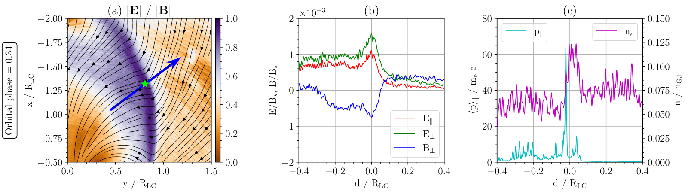
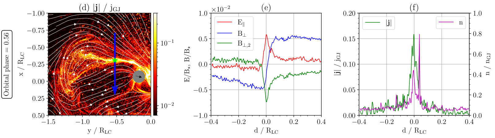
图注：在两种结构最清晰的相应轨道相位取得的剖面。上排为怪物激波区域：(a)电场与磁场强度之比，蓝箭头为沿d增大的切线方向；(b)沿切线的面内平行/垂直电场和面外磁场；(c)平行体运动动量与等离子体密度。下排为随后产生耀发的重联电流片：(d)电流密度；(e)面内与面外电磁场；(f)总电流密度与等离子体密度。绿色星号标出波峰或电流片位置d=0；(a)、(d)曲线示面内磁场。上下排取自结构各自最清楚的相位，不强行当作同一时刻。
怎么看这张图：上排同时看电磁扰动方向、等离子体动量与密度峰，下排看磁场翻转处是否与电流和密度增强对齐。这些是作者识别结构的局部证据；粒子注入阈值与有限分辨率仍限制对真实微观辐射的判断。 直接展示快磁声波极化/压缩与电流片反向磁场的诊断链，支持本文动力学新贡献。
来源与置信度：arXiv HTML；source verified；https://arxiv.org/html/2610.18208v1/fig3a-m17-FMS-rot.png；https://arxiv.org/html/2610.18208v1/fig3b-m17-reconnection-rot.png
图5：坡印廷光度随半径下降及轨道调制
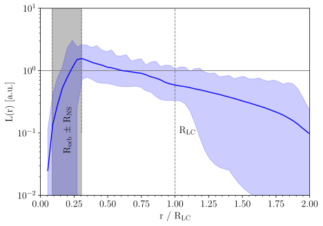
图注：从双星质心量起，平均坡印廷通量光度随半径的变化，蓝线为平均值；蓝色阴影为一个轨道周期内若干时刻得到的光度范围，灰色阴影标出两颗恒星到质心的距离范围。这是球面积分的电磁光度，不是相干射电波段的辐射光度；半径尺度以轨道光柱R_LC为参照。
怎么看这张图：蓝线为球面净向外电磁能流，外移后下降、蓝色区间显示轨道不同取样时刻的变化；必须结合粒子获得能量理解。曲线既不是远处射电光变，也不能把全部下降量乘一个效率就当成已观测FRB。 核对电磁能量预算与输运损耗，避免只展示磁场形态而缺少可用功率限制。
来源与置信度：arXiv HTML；source verified；https://arxiv.org/html/2610.18208v1/fig4-model17.svg
强相关工作
Most与Philippov 2022年关于双中子星晚期前驱耀发的研究（本文参考文献[31]）使用大尺度磁场方法讨论磁拓扑如何储存和释放能量，说明并合前爆发并非本文首次提出。本文的增加是让两星在惯性系实际公转并读取粒子响应；与Parsons等2026年参考文献[34]强调的自转扭转与电流片磁岛机制相比，是驱动条件与候选通道的互补，不应把两者写成互相排斥且已裁决的模型。
怪物激波转射电所需的局部微观桥梁来自另一层研究。Vanthieghem与Levinson 2025年参考文献[41]研究怪物激波的射电前驱，为本文取千分之一效率提供参考，但把某局部设置得到的转换效率搬到双星全局几何仍是假设。本文没有确认波内规则结构就是所需孤子，也没完成射电穿过磁层的传播计算；因此“有参考机制”与“本系统已算出FRB”之间仍有清楚的证据缺口。
同一事件 / 同类源线索：
相似工作：
基础理论 / 方法工作：
相反观点 / 张力线索：
（未提供）
相关简报
1. ELISA: A Bayesian X/$γ$-ray Spectral Analysis Toolkit
- 来源：arXiv / astro-ph.HE
- 链接：https://arxiv.org/abs/2610.14587
- 作者：Wang-Chen Xue, Sheng-Lun Xie, Chao Zheng, Shao-Lin Xiong, Xiao-Bo Li, Yong Chen, Peng Zhang, Yan-Qiu Zhang
- 公告 / 来源日期：2026-10-14
- 阅读层级：相关简报
- 评分：novelty 7/10，importance 7/10，relevance 10/10，final 9.05/10
- 推荐理由：ELISA把前向响应、计数统计、JAX推断和预测诊断统一，对用户高能谱拟合高度相关；速度收益需核验是否同算法公平比较。
中文题目：ELISA：把前折叠、贝叶斯采样和模型检验接成完整的高能能谱分析流程
问题、方法与结论：作者针对X/伽马能谱“拟合容易、后验与模型检验难以连贯复现”的问题，将OGIP能谱和响应读取、光子谱前折叠、计数及背景似然、采样和预测检验整合到JAX工具ELISA。HXMT蟹状星云示例联合LE、ME、HE的1.5—250 keV数据，以131个分箱拟合吸收幂律。在四个M1 Max CPU设备、100次重复的特定设置下，ELISA/NUTS每次约12—16秒，XSPEC/Goodman–Weare约80—110秒；前者有效样本更多，因此单位时间有效样本率约高百倍。这是不同采样方案的案例比较，不能解释为软件自身普遍快百倍。
意义与贡献：价值在于把“链收敛”和“模型足够解释数据”分开处理。工具同时提供收敛诊断、逐能道的留一预测检验和模拟后重新拟合的后验预测检验；单个约化拟合统计量接近1，不再成为接受模型的唯一理由。
可借鉴之处：可借鉴其保留响应、分组、能段、先验和采样配置的完整记录方式，并用有效样本率衡量效率。对于截止能等弱约束参数，还应将预测准则差异与标准误一起报告，不能只凭增加参数后的最佳拟合值判断新谱结构。
局限与关注点：本文没有给出同一采样器下跨软件的纯性能基准，也没有凭此发现新的蟹状星云截止。W-stat和PG-stat对背景作轮廓化而非完整边缘化；非JAX模型需有限差分，可能削弱加速。当前框架还不直接支持带自身响应的物理背景模型和跨数据集显式协方差，迁移到LACT联合分析前需检查这些边界。
图3
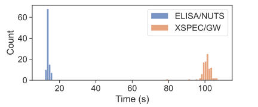
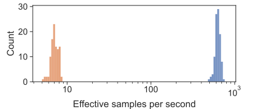
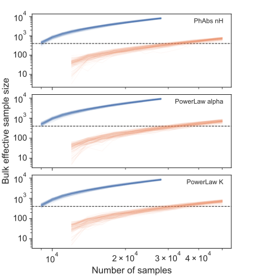
图注：HXMT蟹状星云示例的采样效率诊断。上：100次重复拟合的实际采样耗时分布，蓝色为ELISA/NUTS，橙色为XSPEC/Goodman–Weare。中：每次拟合的单位时间有效样本数分布，颜色同上。下：有效样本数bulk ESS随总样本数的变化，每条细线代表一次运行；虚线标记bulk ESS=400。
怎么看这张图：耗时和有效样本率应一起比较。两个系统所用采样器不同，效率优势还包含采样算法的差异；此图只能支持指定低维Crab能谱与硬件配置下的案例结论。 同时展示墙钟耗时与链相关性带来的有效样本收益，可防止将约百倍ESS/秒误称为纯软件耗时百倍。
来源与置信度：arXiv HTML；source verified；https://arxiv.org/html/2610.14587v1/inference_time.svg；https://arxiv.org/html/2610.14587v1/ess_per_sec.svg；https://arxiv.org/html/2610.14587v1/ess_evolution.svg
2. A GeV Gamma-Ray Spectral Excess in the Fermi Blazar 4FGL J0136.5+3906
- 来源：arXiv / astro-ph.HE
- 链接：https://arxiv.org/abs/2610.14924
- 作者：Shi-Ju Kang, Yue Yin, Yong-Gang Zheng, Qingwen Wu, Junhui Fan
- 公告 / 来源日期：2026-10-14
- 阅读层级：相关简报
- 评分：novelty 7/10，importance 7/10，relevance 9/10，final 8.70/10
- 推荐理由：全文降档：谱凸起值得复核，但自由背景归一化重拟合不构成独立弥散模型检验，17年与11年检验混用、似然列符号及峰值转换口径待澄清，扫描显著性须模拟校准，不按发现精读。
中文题目：4FGL J0136.5+3906 的约19 GeV谱凸起：值得独立复核的 LAT 候选特征
问题、方法与结论：作者分析2008—2025年约17年的Fermi-LAT数据，在100 MeV—1 TeV谱中用对数抛物线连续谱加线性能量高斯，报告约19 GeV的宽凸起。17年45分箱结果为TS=39.79，作者按三自由度报局部约5.7σ；宽度约10 GeV，属于宽谱结构而非窄线。两段8.5年中，过量通量从约4.59降至2.67×10⁻¹⁰光子·cm⁻²·s⁻¹，后段TS仅9.90，不能当作稳定暗物质信号。
意义与贡献：这提供了可以用公开LAT数据复核的具体源和能区，价值是候选谱结构及其时变性。原文声称强统计证据，但扫描能量和宽度后，零信号下这些参数无定义、若振幅限制非负，还涉及参数边界；三自由度近似与未给有效试验数依据的500次修正，都不足以完成全局校准，因此本日报将其由精读降为简报。
可借鉴之处：可借鉴的是同时检查计数谱、不同分箱、分时段以及事件类型，并与邻近和离源控制区比较。复现应统一响应、源模型及似然定义，再用无凸起模拟重跑整套搜索。附录A2实际主要针对11年子集，不能直接说它完整验证了17年主结果。
局限与关注点：关键局限是弥散归一化在拟合中自由浮动：先改±10%再重新优化得到同一最优值，并不检验弥散形态系统误差。表A1的似然列符号与正TS表述、部分极小宽度误差及峰值转换口径也需澄清。源红移约0.18只是机器学习估计，作者没有给出能排除其他辐射模型或建立新物理的联合分析。
图1：不同分箱下的谱凸起
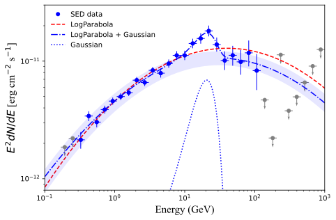
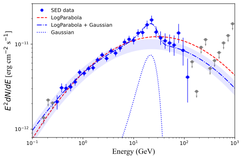
图注：4FGL J0136.5+3906在100 MeV—1 TeV范围的17年SED及谱过量：左为35个分箱，右为45个分箱。红虚线是纯对数抛物线零假设，蓝点划线是加入高斯后的模型；蓝点为TS>25的SED分箱，灰色向下箭头为上限，蓝点线表示高斯过量分量。
怎么看这张图：35与45分箱都显示相似宽结构，但这些是同一批光子，不能作为两份独立确认。需要在一致背景和响应下模拟整套扫描，才能把拟合改善转成可靠全局显著性。 展示真正待核验的观测特征
来源与置信度：arXiv HTML；source verified；https://arxiv.org/html/2610.14924v1/fig1_35.svg；https://arxiv.org/html/2610.14924v1/fig1_45.svg
附录图A3：过量随时间变化
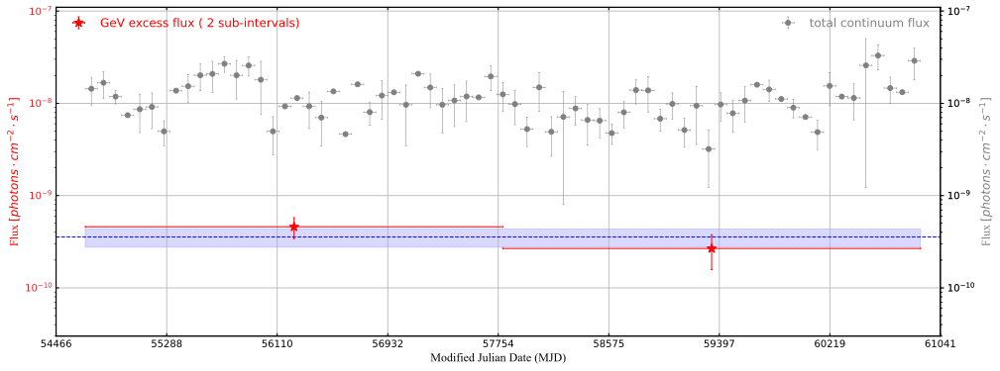
图注：4FGL J0136.5+3906谱过量的时间稳定性。17年（2008.8—2025.8）的100 MeV—1 TeV数据分为两个等长时段。红星（左轴）为各时段过量通量；蓝点线和阴影为对两个红点做常数拟合的最优值及1σ不确定度；灰点/曲线（右轴）为100 MeV以上总伽马通量。
怎么看这张图：比较两个8.5年时段的过量通量及大误差；名义差异提示继续做分时复现，不宜把平均谱当稳定的窄线或暗物质发现。 制约稳定信号的解释
来源与置信度：arXiv HTML；source verified；https://arxiv.org/html/2610.14924v1/figA3.svg
3. Two sides of the same spin: tracking optical and radio pulsations of SAX J1808.4-3658 from outburst to quiescence
- 来源：arXiv / astro-ph.HE
- 链接：https://arxiv.org/abs/2610.18322
- 作者：C. Ballocco, A. Miraval Zanon, A. Papitto, M. Burgay, M. C. Baglio, C. Malacaria, F. Ambrosino, A. Possenti
- 公告 / 来源日期：2026-10-14
- 阅读层级：相关简报
- 评分：novelty 7/10，importance 8/10，relevance 8/10，final 8.70/10
- 推荐理由：SAXJ1808联合光学X射线脉冲显示随吸积率相反变化和变化的亚毫秒时滞，能区分辐射区；静默期未检出不排除活跃射电脉冲星。
中文题目：SAX J1808的光学与X射线脉动：不同步响应及静默期的深上限
问题、方法与结论：作者用两晚TNG/SiFAP2与NICER同步观测，追踪2022年爆发衰减中的约401赫兹脉动，再搜索2021—2025年静默期光学及MeerKAT射电脉冲。两晚V波段脉动光度约1.15和1.38×10^30尔格每秒，对应背景校正rms振幅0.28%与0.35%；光学峰落后X射线0.88±0.04与0.51±0.03毫秒。这里比较的是脉动分量，不能混成总光学辐射，也不是始终相差半周期。
意义与贡献：两波段随吸积亮度呈不同响应，联合时序与能谱不支持用同一简单谱分量解释。同时比较绝对脉动光度，有助区分分数振幅变化与非脉动背景稀释，避免仅凭百分比推断供能。它约束光学粒子加速区与吸积柱X射线区的联系；少数点显示的反相关仍须更多状态验证，盘—磁层同步辐射是解释而非已定位发射区。
可借鉴之处：可借鉴同参考历元折叠、轨道修正和总光度/脉动光度分开比较。SiFAP2绝对计时精度上界约60微秒，并不比30—40微秒统计误差更小；不能照抄原文相反表述，也不能把相位偏移直接换成光程距离。
局限与关注点：静默期V脉动光度95%上限为2.2×10^29尔格每秒，依赖净源亮度和背景估计；射电约9微央斯基是给定信噪比、占空比的灵敏度，置信口径不同。未检出不等于没有自转供能脉冲星：束射与双星内吸收仍可能隐藏信号，仅一轮射电与光学真正重叠，高频复测更有区分力。
图3：两个夜晚的光学与X射线自转脉冲轮廓
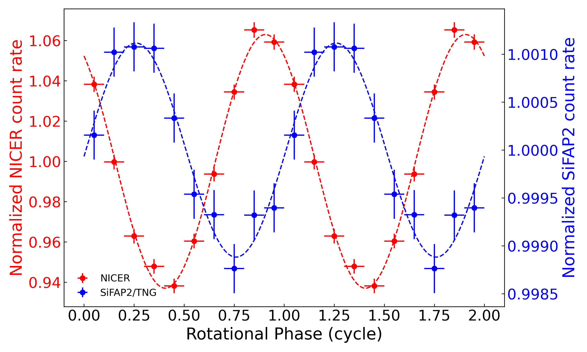
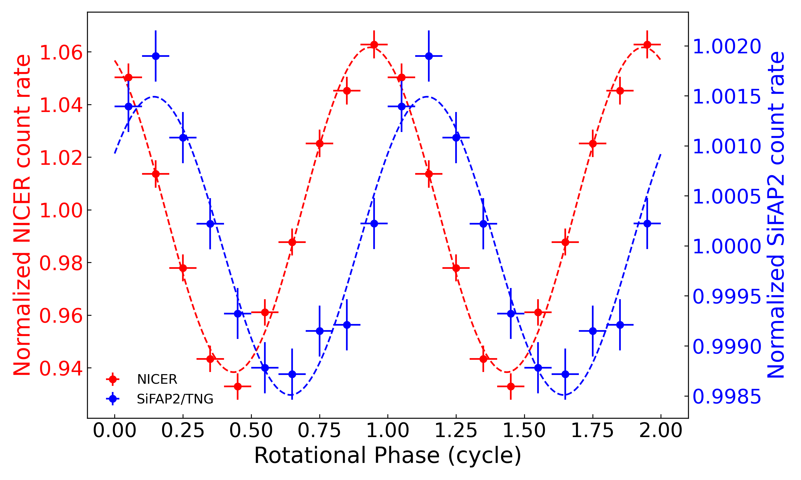
图注：SAX J1808在X射线（红色）与光学（蓝色）的脉冲轮廓；上图为O1，下图为O2。X射线到光学相位偏移分别为0.353±0.017和0.205±0.013，对应时间偏移0.88±0.04毫秒与0.51±0.03毫秒。两波段使用不同纵轴尺度，不能直接比较轮廓的纵向振幅。上述为文中统计误差，绝对计时系统精度另见正文。
怎么看这张图：比较红蓝峰在相位轴的位置，上下两夜的光滞发生变化；纵轴尺度不同，不能从曲线画得高低比较光度。0.88和0.51毫秒是脉动轮廓偏移，不自动等于两个发射区间的光行时。 直接呈现同时观测的核心时序证据，并区别可变相位与固定半周解释。
来源与置信度：arXiv HTML；source verified；https://arxiv.org/html/2610.18322v1/Figures/timelag_26ago.png；https://arxiv.org/html/2610.18322v1/Figures/timelag_27ago.png
4. Reconstruction of Interstellar Cosmic Ray Anisotropy via Heliospheric Propagation Modeling and SVD Inversion
- 来源：arXiv / astro-ph.HE
- 链接：https://arxiv.org/abs/2610.18384
- 作者：Reilly Tom, Paolo Desiati, Juan Carlos Díaz-Vélez, Perri Zilberman
- 公告 / 来源日期：2026-10-14
- 阅读层级：相关简报
- 评分：novelty 7/10，importance 7/10，relevance 9/10，final 8.70/10
- 推荐理由：日球层传播矩阵的奇异值反演与南北分量缺失问题直接对应宇宙线各向异性方法，可借鉴但需核验模拟恢复与实际观测信息的区分。
中文题目：从地球宇宙线图反推星际偶极：SVD反演可行，但南北信息补回依赖磁场与模拟先验
问题、方法与结论：作者在日球层磁场模型中反追踪100 GeV—100 TeV反质子，按到达方向和能量建立星际介质到地球的输运矩阵，再用截断奇异值分解反演。验证采用已知星际偶极“注入—传播到地球—反演回星际”的模拟闭环；按IceCube约10 TeV能量响应混合后，加入有限计数噪声，仍能较好恢复注入偶极。主要挑战是地面各向异性分析去掉了赤纬方向的m=0分量，直接逆变换会明显失真。
意义与贡献：它把磁传播的不可逆信息损失、地面曝光估计造成的盲区和有限事例数误差放进同一反演链条。这样能具体检验“观测图上复杂结构可能来自传播”以及哪些重建误差由数据量主导，避免将地球到达图直接等同于源区分布。
可借鉴之处：可复用的是将探测器能量响应纳入输运算符，再通过模拟注入测试正则化和模式恢复。对HAWC、IceCube及后续宇宙线图联合解释，适合用作前折叠/逆问题验证模板，但应扫描不同磁场、注入模式和成分，检查模型失配而不只检查计数噪声。
局限与关注点：补回m=0不是观测凭空恢复丢失信息：圆拟合假设星际偶极沿已知局域星际磁场，SVD截断也依据已知注入真值的均方误差选择。文中“计数噪声主导”只在所测模型与能量分布下成立。真实HAWC+IceCube图反演列在未来工作，尚未给出实测星际各向异性的新测量或宇宙线源定位。
图4
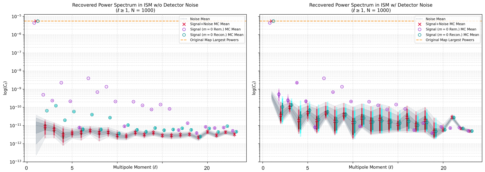
图注：星际介质→地球→星际介质模拟闭环的重建角功率谱比较，横轴为多极阶数，纵轴为角功率。左：理想探测器，仅计入矩阵伪逆误差，对比完整信息、去掉南北m=0分量及圆拟合补回后的重建。右：进一步加入有限探测计数的泊松涨落。灰带表示矩阵处理的噪声水平。注入信号为偶极；高阶残余功率可由伪逆处理产生，并非注入的真实高阶结构。
怎么看这张图：先看偶极能否在补回模式后恢复，再比较右图噪声。所有“恢复”均针对已知注入与指定磁场模型，圆拟合还用了偶极与局域磁场对齐的假设，不是无先验恢复实测丢失信息。 直接呈现模式丢失、先验补回和计数噪声三者的影响；原图图注颜色表述有歧义，按物理比较对象解释而不补造图例映射。
来源与置信度：arXiv HTML；source verified；https://arxiv.org/html/2610.18384v1/figures/aps_noise_comparison.png
5. Evidence for Distinct One-Off and Repeating Subpopulations in CHIME/FRB Catalog 2
- 来源：arXiv / astro-ph.HE
- 链接：https://arxiv.org/abs/2610.18710
- 作者：Sloane Sirota, Duncan R. Lorimer
- 公告 / 来源日期：2026-10-14
- 阅读层级：相关简报
- 评分：novelty 8/10，importance 7/10，relevance 8/10，final 8.65/10
- 推荐理由：全文降档：八个模型下SBI偏好含一次性成分，但选择函数由同一目录反推且忽略DM宽度光谱时变曝光，先验边界与模拟检验不独立，不能证明真实灾变人口。
中文题目：CHIME第二目录是否需要“一次性”FRB成分：八个人口模型的条件比较
问题、方法与结论：作者用CHIME第二目录的每源爆发次数直方图，比较两种爆发率分布、两种等待时间及是否加入一次性源，共八个模型。4539次爆发来自3641个源；去掉早期不稳定曝光、部分旁瓣和两个超活跃源后，拟合使用3854次爆发。模拟推断偏好“对数正态爆发率＋泊松等待＋一次性成分”：对次优模型的对数贝叶斯因子差2.87，对最佳纯重复模型为18.80。
意义与贡献：贡献是把大量只见一次的源与少数高活跃源放进同一模拟框架，提出后续目录中重复源比例可检验的预测。它支持的是所测八模型中的额外低重复/一次性成分，不能证明某个源真的永不重复，更未识别灾变天体。
可借鉴之处：可借鉴每源计数、后验预测与模型比较的组合。关键瓶颈是选择函数只由同一目录的赤纬分布拟合，未包含色散、宽度、频谱、光度和束射；部分人口参数贴近先验边界，应改宽先验、扩大模型族检查稳定性。两个统计算法共用数据与模拟，不能算两份独立观测证据。
局限与关注点：所谓约3.6万重复源上限、约19次/天均限于CHIME可见人口和该模型。超活跃源检验虽未用两源训练，但LPO多预测至少五个，粗分箱不能证明精确匹配。五年后重复比例低于2%是模型预测；极慢重复与真正一次性仍须更长监测及完整选择函数区分。
图4：最佳LPO模型的计数分布与目录内时间演化
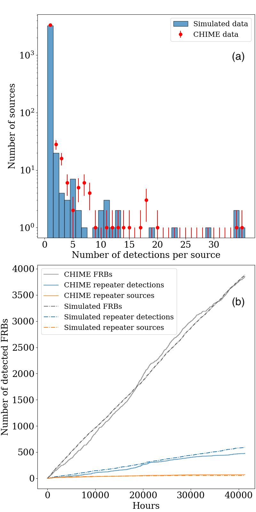
图注：最佳模型LPO（对数正态源爆发率、泊松等待时间及一次性子人口）的结果。(a)具有给定探测次数的源数与CHIME第二目录比较，误差棒采用泊松统计；(b)模型与第二目录的时间演化对比，分别展示FRB探测总数、来自重复源的探测次数及重复源数。三种累计数量口径不同；此图为同目录检验，未表示未来新目录已验证。
怎么看这张图：(a)面板检查一次检测源和多次检测源是否同时匹配；(b)面板检查同一目录内累计量的时间趋势。训练摘要为整段计数直方图，时间曲线虽未直接作为该摘要，仍共享目录与选择假设，不能称独立新样本验证。 一张图同时呈现模型拟合目标与时间预测检查，最能显示本工作的贡献和证据独立性边界。
来源与置信度：arXiv HTML；source verified；https://arxiv.org/html/2610.18710v1/Fig4.png
6. Self-Interacting Dark Matter: From Particle Physics Theories to Structure Formation Simulations
- 来源：arXiv / astro-ph.HE
- 链接：https://arxiv.org/abs/2610.16968
- 作者：Martin Rosenlyst, Vinh Tran, Oliver Zier, Xuejian Shen, Mark Vogelsberger, Thejs Brinckmann, Mads T. Frandsen, Jesús Zavala
- 公告 / 来源日期：2026-10-14
- 阅读层级：相关简报
- 评分：novelty 8/10，importance 8/10，relevance 7/10，final 8.65/10
- 推荐理由：AREPO2把多态非弹性暗物质反应网络映射到结构形成并系统验证，性能与物理覆盖有实质推进，尚非数据对暗物质的证据。
中文题目：把暗物质微观相互作用接入结构模拟：多物理SIDM实现与验证，百倍加速限特定散射测试
问题、方法与结论：作者将暗物质截面、角分布、内态转换、耗散和衰变输入接入arepo-2，并用解析散射、热化、孤立晕塌缩和宇宙学模拟验证。对极强前向散射，混合算法把频繁小偏转作为阻力—扩散处理，稀少大偏转仍逐次蒙特卡洛采样。在无反冲束流格点测试中，单核CPU推进相同物理时间、取较大角度分界时，比完整角分布蒙特卡洛最多快约百倍；这不是全部宇宙学模拟的统一加速率。
意义与贡献：暗物质晕演化不仅由一个常数截面控制：角分布决定动量输运，内态跃迁和耗散改变能量收支。本文将这些物理差异落实为可验证的数值接口，并复现arepo-1非弹性及gizmo耗散基准，减少将实现误差误判为暗物质物理的风险。
可借鉴之处：可借鉴分层验证路线：先核查单次散射和守恒，再验证热化与自引力演化，最后比较相同初始条件的宇宙学晕。对伽马暗物质研究，它有助理解密度分布输入的模型依赖，但不能直接替代含重子效应和观测选择的J因子推断。
局限与关注点：混合算法需先积累足够小角散射才逼近完整角分布，分界角越大，达到一致所需时间也可能越长。测试只验证所选模型与分辨率，不证明所有参数均收敛；宇宙学基准是纯暗物质模拟。微观模型到模拟输入还可能多对一，不能由某个晕核唯一反推粒子模型。完整SIDM模块与本文数据需向作者申请，公开的仅包括部分验证工具。
图32
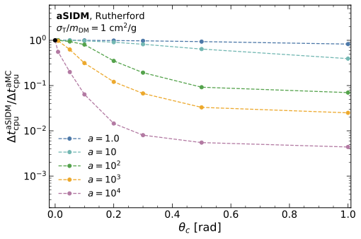
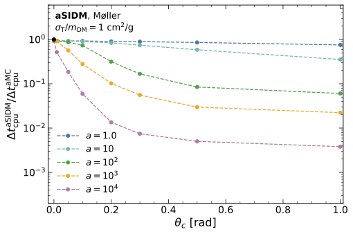
图注：束流偏转测试中混合aSIDM相对完整各向异性aMC的计算成本。左为Rutherford散射，右为Møller散射，转移动量截面每单位质量为1平方厘米/克；各测试推进到相同的5个系统时标。纵轴为单核CPU耗时相对分界角θc=0的aMC耗时，横轴为小角/大角处理的分界角θc。增大分界角将更多前向小偏转交给阻力—扩散处理并放宽步长要求，强各向异性配置下最高收益约两个数量级。
怎么看这张图：这张图只度量固定束流测试的数值成本。需结合图31的一致时间要求判断误差；不能把最高加速推广为所有模型、并行机器或完整宇宙学模拟都快百倍。 核验最容易夸大的百倍速度主张，并明确单核、束流场景和角度分界条件。
来源与置信度：arXiv HTML；source verified；https://arxiv.org/html/2610.16968v1/cpu_vs_theta_rutherford.svg；https://arxiv.org/html/2610.16968v1/cpu_vs_theta_moeller.svg
7. Deep learning methods for gamma event selection in TAIGA-IACT image analysis in stereo-mode
- 来源：arXiv / astro-ph.HE
- 链接：https://arxiv.org/abs/2610.16269
- 作者：E. O. Gres, A. P. Kryukov, P. A. Volchigov, A. P. Demichev, J. J. Dubenskaya, D. P. Zhurov, S. P. Polyakov, E. B. Postnikov
- 公告 / 来源日期：2026-10-14
- 阅读层级：相关简报
- 评分：novelty 6/10，importance 6/10，relevance 10/10，final 8.40/10
- 推荐理由：TAIGA双镜CNN和自编码器比较直接对应IACT背景抑制，贡献属具体阵列方法增量，应简报且核验数据分割、性能定义与模拟域限制。
中文题目：TAIGA双镜深度学习分类：早融合抑制质子更强，但暗图选择偏差与测试统计不可忽略
问题、方法与结论：作者用CORSIKA模拟比较双镜图像的早融合、中间融合和自编码器特征分类。训练含3万伽马和15.7万质子事件，另以7100伽马及7600质子样本定阈值；独立测试采用400伽马、39600质子，均限40—400 TeV、天顶角30—40度。按不随图像亮度变化的阈值，早融合留下206个伽马和3个质子，质子抑制率为13200。该数是初始质子数除以残留质子数，不是灵敏度品质因子Q，也不是源探测显著性。
意义与贡献：工作把单镜和双镜、图像信息融合方式以及亮度相关阈值分开比较，提示阵列背景抑制既依赖输入信息，也依赖事件选择。固定阈值通过拒绝较暗图像得到更强抑制，不能把收益全归于网络学到了更好的粒子物理特征。
可借鉴之处：对LACT可借鉴独立验证集定阈值、独立测试集计数，并同时报告伽马保留和质子残留。还应按能量、图像电荷和几何条件展示效率，再与同一事例集上的Hillas基线比较，才能判断分类收益是否抵偿低亮度事件损失。
局限与关注点：测试伽马/质子约1:99，比文中所述真实Crab背景约1:10000温和，且仅有3个残留质子，尾部误差很大。本文未给真实天空背景和完整点源灵敏度验证。表1自编码器固定阈值一行同时写“3个残留”和“2475倍抑制”，彼此不符，本简报不采用该行作精确性能排名；模型也需在本阵列重新训练和检验。
图4
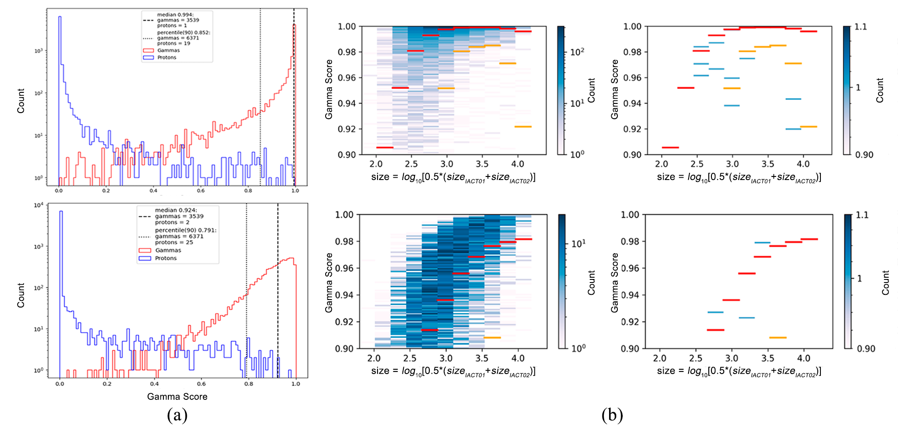
图注：验证集分类结果：上行为中间融合，下行为自编码器特征分析。左列(a)显示采用不随图像亮度变化的分类阈值时的验证分布；右列(b)显示伽马分数与图像电荷size的关系。红线为保留50%伽马事件的阈值，橙线为保留90%伽马事件的阈值。
怎么看这张图：看右列低size区域阈值如何变化。自编码特征在暗图上的类别区分较差，采用固定阈值会删去更多这类事件；总体背景抑制增强不等于整个能量与亮度范围都提高了效率。 展示决定结论的重要选择效应，避免仅引用三个残留质子或总体AUC掩盖低亮度偏差。
来源与置信度：arXiv HTML；source verified；https://arxiv.org/html/2610.16269v1/fig_4.png
8. An end-to-end experimental pipeline for automated track identification for paleo-detectors
- 来源：arXiv / astro-ph.HE
- 链接：https://arxiv.org/abs/2610.17008
- 作者：Claudio Galelli, Alessandro Testi, Lorenzo Caccianiga
- 公告 / 来源日期：2026-10-14
- 阅读层级：相关简报
- 评分：novelty 7/10，importance 7/10，relevance 8/10，final 8.35/10
- 推荐理由：古探测器提供从刻蚀、显微读出到响应前向折叠的完整实验链，对宇宙线探测方法有实际参考；黑曜石验证不等于岩盐或古通量测量成功。
中文题目：古探测器走向实验：黑曜石裂变径迹的自动读出与前折叠校准，岩盐宇宙线测量仍待完成
问题、方法与结论：PRImuS将样品制备、多焦面显微扫描、两级机器学习识别及径迹谱前折叠接成实验流程，并用真实黑曜石裂变径迹验证。59张人工标注图含2623条径迹，其中18张用于验证及阈值优化。先分割、再分类后，假阳性从194降至81，下降58.2%；但召回率同时从0.760降至0.615。重建长度分布与人工标注的K–S检验p=0.1973，只能说未拒绝差异为零，不能证明两者等价。
意义与贡献：进展不只是网络分类，而是把矿物里三维潜径迹如何变成表面蚀坑、哪些坑被看见、哪些长度被错分都纳入读出响应。自然黑曜石样品上的前折叠比较，补上了“理论每单位质量径迹谱”与“显微镜每单位面积候选”之间的实验接口。
可借鉴之处：值得借鉴的是分别标定长度相关召回率、长度迁移矩阵和单位面积假阳性率。样品真径迹密度变化时，不能照搬旧样品的精确率；表面缺陷数量并不与真实径迹成比例。新矿物必须重新标注、训练并测量响应。
局限与关注点：验证集同时参与选模型和调阈值，性能还需独立样品检验。黑曜石的已知信号是铀裂变径迹，并非测得了古宇宙线历史；岩盐目前只建立等离子体处理和成像方案，宇宙线诱发坑的识别、蚀刻参数与响应仍待完成。因此本文是实验链条进展，不能表述为已经从六百万年岩盐读出宇宙线通量。
图4
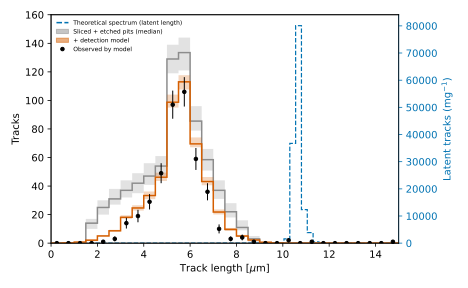
图注：Monte Arci黑曜石裂变径迹的前折叠链条。横轴为长度。蓝色虚线按右轴表示铀238自发裂变的潜径迹理论谱，单位为每毫克径迹数；灰色为几何切片和HF蚀刻后、指定面积内的蚀坑长轴分布；橙色进一步折叠由诱发裂变径迹验证集测得的检测响应。黑点为OptimusPrimus报告的径迹计数，误差棒为泊松误差；阴影为蒙特卡洛实现之间的1σ散布。
怎么看这张图：潜径迹长度和显微镜蚀坑尺寸不能直接比较。切片、蚀刻会移动峰，检测响应压低短坑尾部；这是黑曜石裂变径迹的校准，不是岩盐宇宙线谱实测。 展示本文真正完成的实测前折叠接口，比单张分类效果图更能解释物理贡献和测量边界。
来源与置信度：arXiv HTML；source verified；https://arxiv.org/html/2610.17008v1/obsidian_spectrum.svg
9. MRI Turbulence versus $α$-Viscosity in Circumbinary Disks: Implications for Gravitational-Wave Dephasing and Accretion Variability
- 来源：arXiv / astro-ph.HE
- 链接：https://arxiv.org/abs/2610.17212
- 作者：Mudit Garg, Yan-Fei Jiang
- 公告 / 来源日期：2026-10-14
- 阅读层级：相关简报
- 评分：novelty 7/10，importance 8/10，relevance 7/10，final 8.35/10
- 推荐理由：同网格同初态长时MHD与alpha盘比较发现外盘力矩和光变差异，对LISA环境系统项有意义；内区切除使总并合力矩仍不确定。
中文题目：MRI湍流与α黏滞的双黑洞盘比较：供气相近不代表外盘力矩相同，内区切除限制并合结论
问题、方法与结论：作者在相同初始环和网格上，将等质量、固定圆轨道双黑洞周围的三维MHD盘与α黏滞HD盘演化1000个轨道。流向内边界的盘面流束吸积率相差仅约2%，但外盘引力矩按流束率归一后，MHD为HD的3.5±0.8倍。两者盘体近中面有效α相近，约0.11与0.14；腔边却为0.05与0.17，MHD排空较慢，气体堆积且更不对称。结果说明用吸积率校准α盘，仍可能漏掉力矩与变动性质。
意义与贡献：引力波环境移相由气体交换的角动量决定，供气率只是其中一部分。本文把盘体输运、腔边积气和外盘作用分开，提供了磁湍流改变双黑洞环境效应的具体路径；外盘正力矩更强，也不直接意味着双黑洞最终膨胀。
可借鉴之处：可借鉴在匹配背景条件下同时核查应力、面密度、力矩和供气，而不只给一个平均α。MHD还有约0.2倍轨道频率的团块及约1.6倍的拍频，但是否映射成可观测电磁周期，仍需真实冷却和辐射模型。
局限与关注点：模拟切除了r小于两倍双黑洞间距的区域，漏掉迷你盘、吸积角动量及主要共振，故既未确定总并合力矩符号，也未证明总引力波移相提高3.5倍。腔边MRI欠分辨，0.05应视为输运下限，力矩比尚未完成收敛检验。HD缺少持久团块也受内边界影响，不能归结为α黏滞本质上无法产生团块。结论限当前盘厚、磁场和局部等温设置。
图2
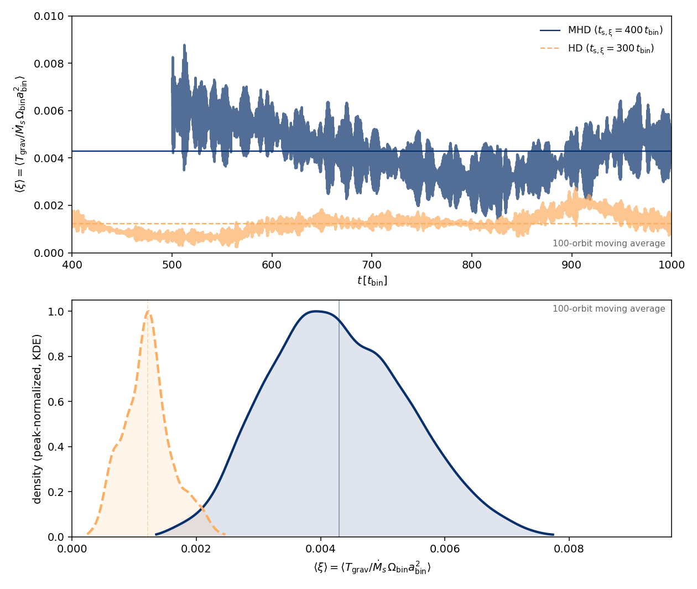
图注：L3C网格上MHD实线与HD虚线的归一化外盘引力矩ξ，定义为外盘引力矩除以盘面流束质量率及双黑洞的轨道比角动量。上：100轨道滑动平均，MHD从400轨道、HD从300轨道的准稳阶段起比较；水平线为各自时间均值4.3×10⁻³与1.2×10⁻³。快起伏来自滑动窗口中残留的双黑洞相位调制。下：滑动平均值的高斯核密度分布，各自峰值归一为1，竖线为时间均值。
怎么看这张图：比较对象只包括r不小于两倍双黑洞间距的气体。该区正力矩的比值不能决定完整并合净力矩；MHD绝对分布较宽也不意味着其相对均值的波动更大。分母已剔除大部分高纬大气补给，不能换用全内边界质量率解释。 直接呈现相同流束供气率下外盘力矩的主结果，并使外盘/总力矩和绝对/相对波动的区别可检查。
来源与置信度：arXiv HTML；source verified；https://arxiv.org/html/2610.17212v1/Plots/T_over_Mdot_compare_combined_moving_avgratio.png
10. A0538-66: A transient ultraluminous X-ray source with a relativistic outflow, 69ms pulsations, and anomalous optical activity
- 来源：arXiv / astro-ph.HE
- 链接：https://arxiv.org/abs/2610.17982
- 作者：Lorenzo Ducci, Sandro Mereghetti, Ciro Pinto, Matteo Bachetti, Motoki Nakajima, Rahul Sharma, Stefano Covino, Michela Rigoselli
- 公告 / 来源日期：2026-10-14
- 阅读层级：相关简报
- 评分：novelty 7/10，importance 8/10，relevance 7/10，final 8.35/10
- 推荐理由：A0538超爱丁顿爆发中同时约束69毫秒脉冲和约0.12c吸收外流，对脉冲ULX能量与遮挡机制有具体观测价值。
中文题目：A0538−66重返超亮态：69毫秒脉冲与约0.12倍光速外流的联合证据
问题、方法与结论：四次XMM-Newton观测及MAXI、REM监测显示，A0538−66在2025年9月30日达到约1.5×10^39尔格每秒的0.2—10千电子伏光度，并检出69.25878毫秒脉冲。高分辨谱用静止光致电离发射线加蓝移吸收分量拟合，支持约0.12倍光速的视向外流；不是把全部谱线位移都当喷流。亮态数据已针对光子堆积筛选探测器和提取区。
意义与贡献：工作把中子星自转、超爱丁顿亮度与高速物质流联系在同一个暂现源中，为少见的暂现超亮X射线脉冲星增加具体约束。多数光学爆发没有对应的明亮X射线爆发，提示我们看到的X射线不能简单代表每次总吸积供能。
可借鉴之处：可借鉴同时扫描吸收体速度与电离状态、逐时段比较谱残差。两次谱的拟合改善超过40，但作者未做全搜索蒙特卡洛校准，不能直接声称全局超过5σ；参数表的1σ误差也不是发现置信度。弱态风未检出可能来自计数与遮挡，不能推为外流消失。
局限与关注点：软硬脉冲约半周期错位，在作者模型中来自厚盘壁再处理几何，不是测得约34毫秒传播延迟；相同历元折叠支持相位比较，却未完成该几何的自洽辐射输运拟合。间歇屏蔽能统一部分现象，仍是定性解释。观测周期导数受轨道解影响，1998年边缘脉冲证据也影响长期扭矩史，尚不能用它精确锁定磁场或吸积状态。
图8：四次观测的光致电离吸收体参数扫描
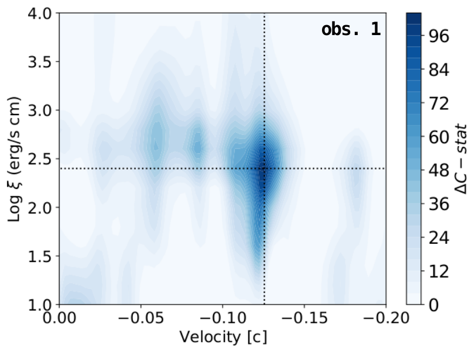
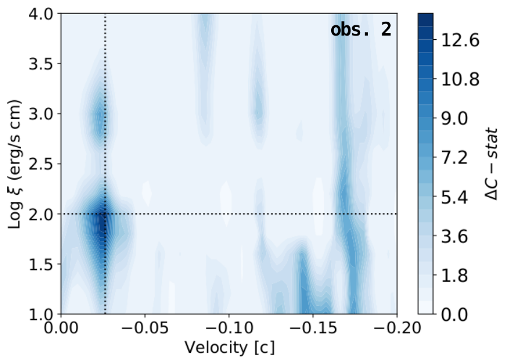
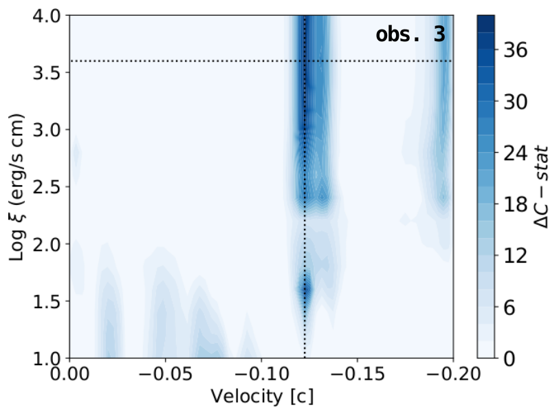
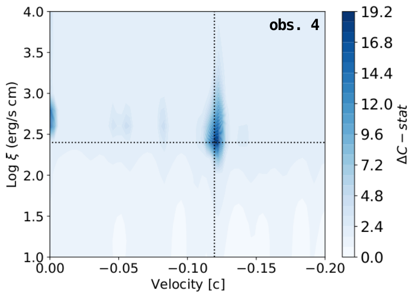
图注：四次XMM-Newton观测的物理模型参数网格：在连续谱加两个谱线发射分量的基准上加入光致电离吸收体，显示各处的谱拟合改善。网格沿视向速度与电离参数扫描；黑色点线标出最佳拟合解。改善统计量为ΔC；速度负值表示朝向观察者的蓝移外流。四个面板对应不同观测，最佳解和拟合改善不是单条谱线位置或独立重复实验。
怎么看这张图：先找视向外流速度约0.12c的拟合改善峰，再比较各次观测计数不同带来的强弱。显著改善支持移动吸收体，但颜色统计量不是全搜索后已校准的发现置信度，较弱观测也不能单凭未检出宣布风消失。 实际速度—电离扫描同时展示外流证据、局部退化与各观测之间的差异，避免只引用一个风速数字。
来源与置信度：arXiv HTML；source verified；https://arxiv.org/html/2610.17982v1/0964320201_XABS_scan_w_label.png；https://arxiv.org/html/2610.17982v1/0964320301_XABS_scan_w_label.png；https://arxiv.org/html/2610.17982v1/0964320401_XABS_scan_w_label.png；https://arxiv.org/html/2610.17982v1/0973790101_XABS_scan_w_label.png
11. Broadband non-thermal emission predictions based on 3D simulations of supernova explosions within active galactic nuclei jets
- 来源：arXiv / astro-ph.HE
- 链接：https://arxiv.org/abs/2610.18476
- 作者：B. Longo, V. Bosch-Ramon, M. Perucho, J.M. Martí
- 公告 / 来源日期：2026-10-14
- 阅读层级：相关简报
- 评分：novelty 7/10，importance 7/10，relevance 8/10，final 8.35/10
- 推荐理由：三维超新星喷流相互作用后的粒子输运与辐射计算具体连接高能辐射，模型可迁移；未指认真实源且强子次级输出弱。
中文题目：喷流中的超新星能有多亮：三维流体模拟后处理预言长期非热辐射，TeV信号取决于光子场和视角
问题、方法与结论：作者将超新星抛射物与AGN喷流相撞的三维相对论流体模拟，接到现象学电子加速、冷却及同步/逆康普顿辐射计算。基准为2太阳质量、10⁵¹ erg的抛射物，遇到功率10⁴⁴ erg/s、洛伦兹因子2的喷流。主要非热能来自被撞击的喷流而非抛射物；模型约2.5千年达峰。在15 Mpc、视角20度的例子中，约1 TeV的逆康普顿能流为10⁻¹³ erg cm⁻² s⁻¹量级。这是长期演化模型，并非已探测的超新星信号。
意义与贡献：这项工作将障碍物膨胀、弓激波扩大和喷流混合的三维动力学，具体连接到多波段亮度与形态。较强磁场增强同步损失并改变电子谱折点，红外光子场影响TeV产额，视角通过多普勒效应令通量相差约一数量级，形成可检查的因果链。
可借鉴之处：可借鉴按流体网格的内能和压力构造非热能量及磁场，再比较光谱、长期光变和空间形态。对CTAO目标判断，附近宿主中心较亮的红外场是有利条件；同步X射线和射电形态可提供辅助约束，不能只比较一条TeV灵敏度曲线。
局限与关注点：非热能量比例、加速效率和磁压比例都是输入假设，未自洽求解粒子输运或磁场；远离激波的高能电子还可能被高估。M87数据只作背景比较，并未拟合其knot A，伽马数据也不能分离该结。千秒差距尺度下强子辐射及中微子效率很低，能加速超高能核子不等于能产生可测中微子；更密集喷流根部属于另一情景。
图4
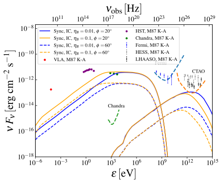
图注：距离约15 Mpc、红移约0.0035的超新星抛射物—喷流相互作用模型能谱，包含同步与逆康普顿成分。实线/虚线分别为20度/60度视角，蓝色/橙色分别为磁压占气压0.01/0.1。图中给出Chandra、Fermi及CTAO灵敏度作比较。叠加的M87数据中，VLA红点、HST紫点与Chandra绿点仅对应knot A；Fermi蓝点、H.E.S.S.灰点和LHAASO黑点为不能分离该结的整源伽马数据。
怎么看这张图：模型曲线对应约2.3千年时刻，作者没有用它统一拟合M87。TeV产额受红外光子场、视角和磁场设定影响；曲线靠近CTAO灵敏度仅表示有条件的观测潜力，不是发现或稳健可探测率。 同时连接动力学后处理的辐射预言、磁场和视角变化、观测量级，并明确模型与不同空间来源数据的比较范围。
来源与置信度：arXiv HTML；source verified；https://arxiv.org/html/2610.18476v1/sed_hr_0.0035.svg
说明
评分由 LLM 给出初评，再由本地阈值策略过滤；IACT、TeV 伽马射线和高能中微子天文学按重点方向处理。